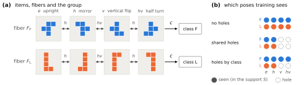
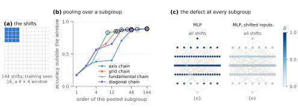
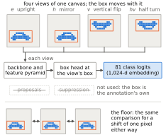
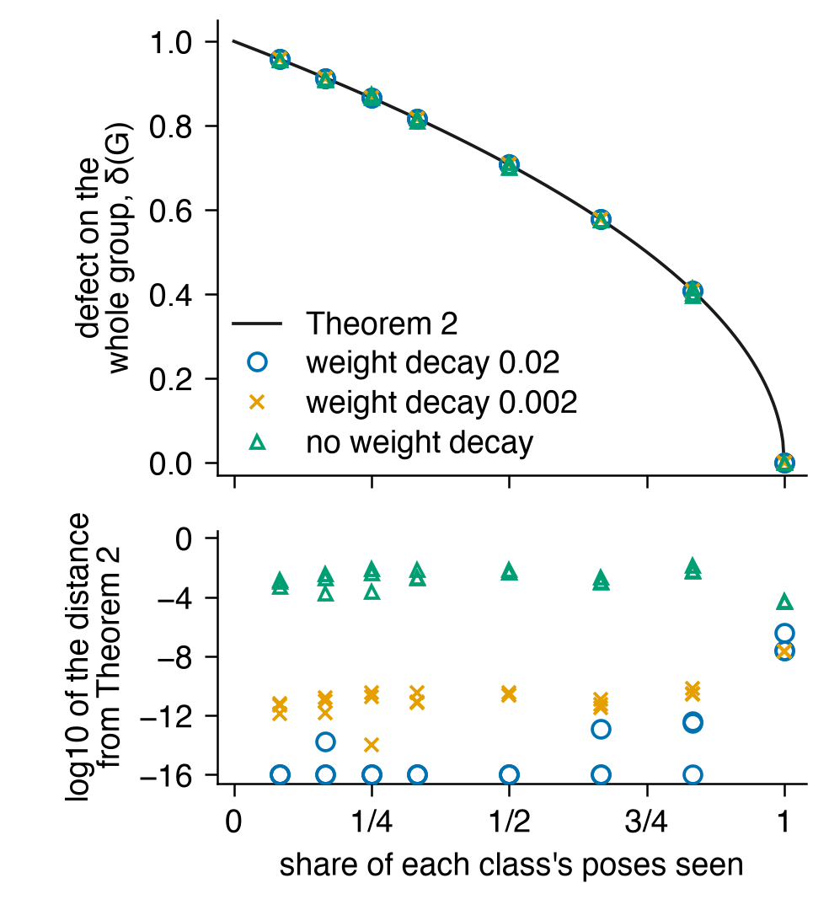
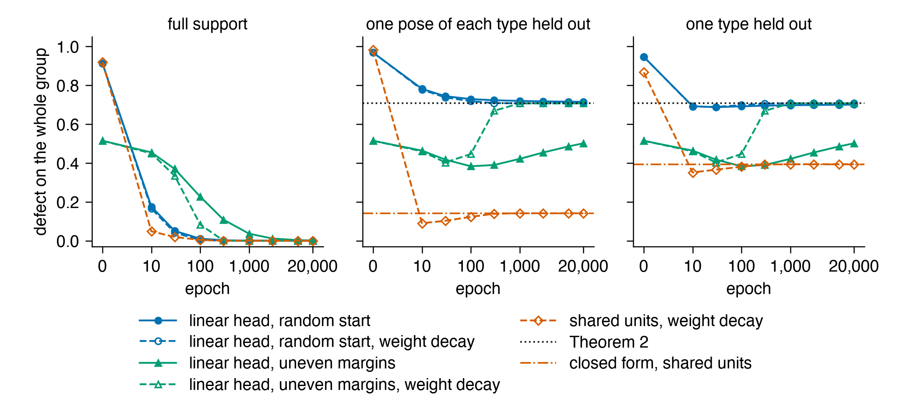
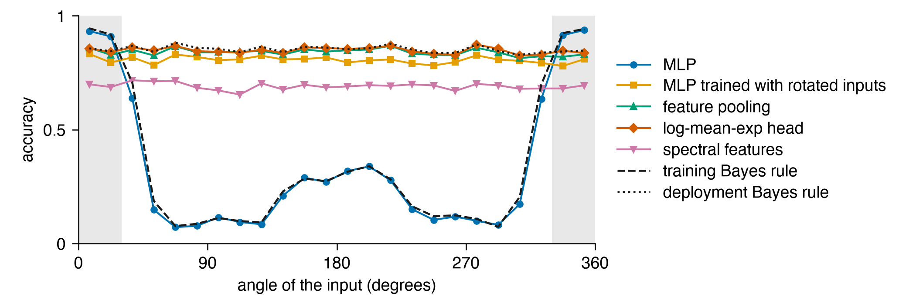
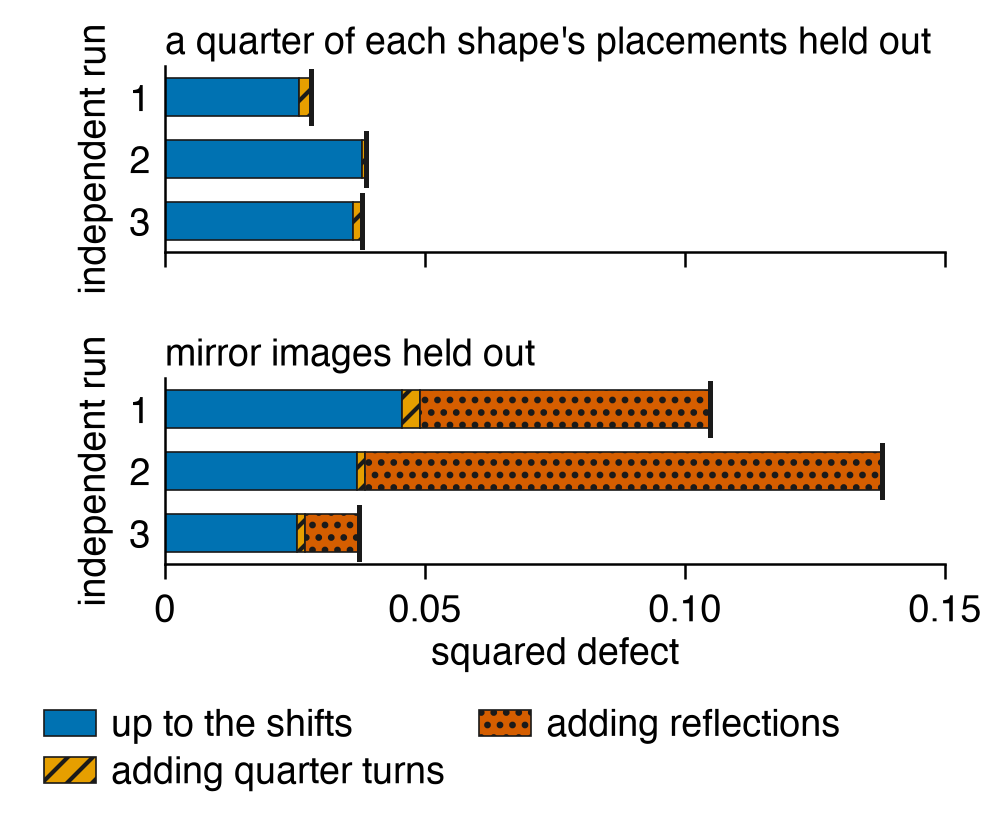
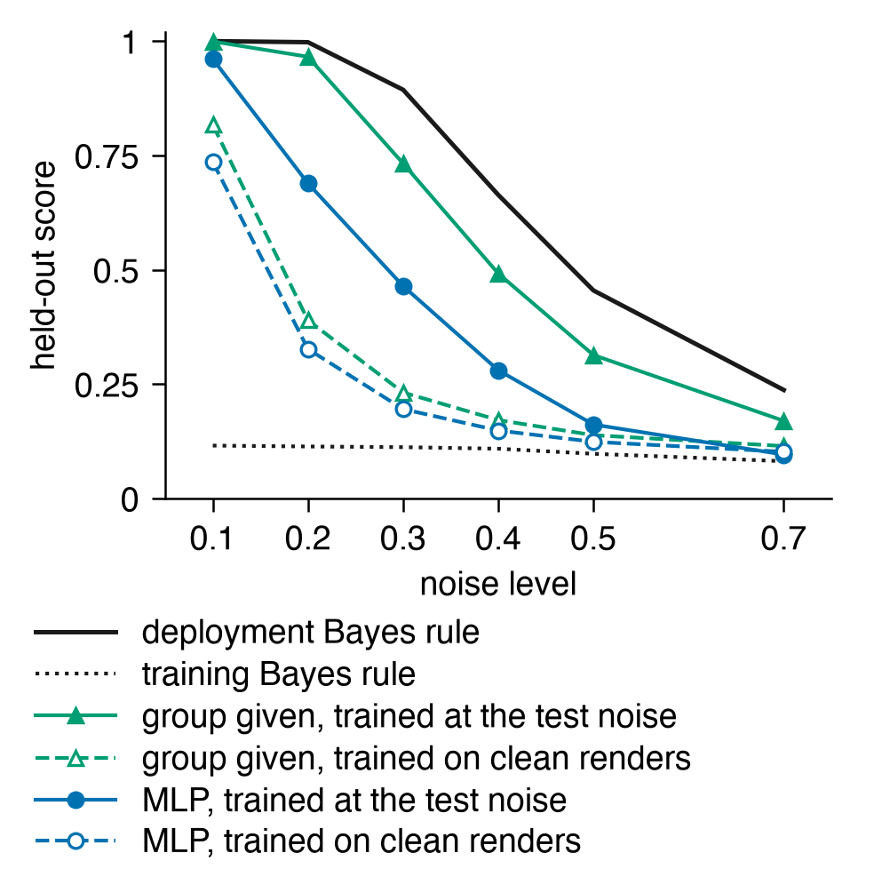
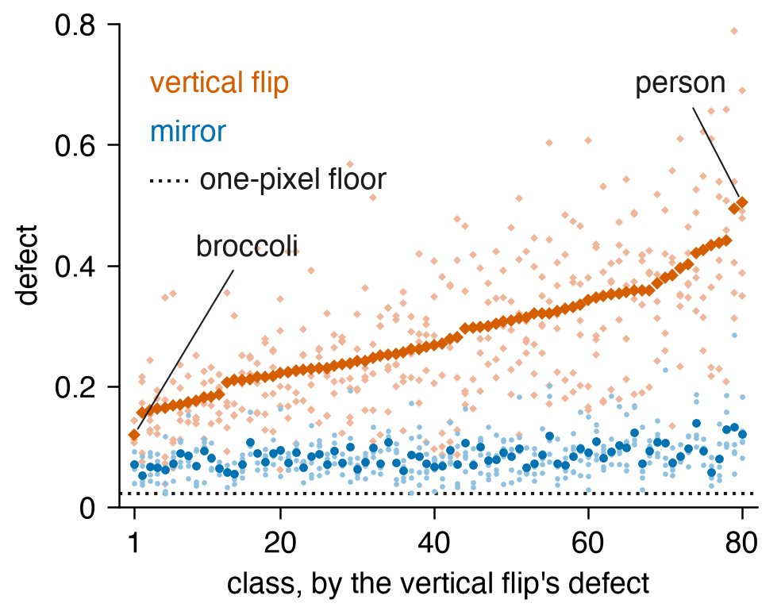

Is Your Vision Model Secretly Cheating? Label-Free Tests of Learned Symmetry
Brian Cruz · University of California, Berkeley, Department of Mathematics · brian.cruz@berkeley.edu
Abstract
Data augmentation and equivariant layers are used to make vision models invariant to symmetries such as horizontal flipping or rotation. Accuracy on a test set drawn from the training distribution does not show whether a model is invariant at poses (angles, shifts, flips of an object) that the training data never contained. We ask when such a symmetry failure lowers accuracy at deployment, where every pose occurs, and how to detect it without labels. The invariance defect, the relative distance of a network’s centred logits from their average over a subgroup of transformations, is computed at every subgroup of a finite symmetry group. The decision-change rate, the share of inputs whose predicted class a transformation changes, bounds the lost accuracy. Under stated assumptions (an orthogonal action, Gaussian noise, a shared class prior, deployment poses uniform on each class’s orbit), the Bayes rule of the training distribution has excess cross-entropy at deployment when it is not invariant. On synthetic renders where this rule and the deployment Bayes rule are computed, in the settings where they differ, a multilayer perceptron comes within 0.005–0.034 of the best accuracy on its training distribution, yet is 0.28–0.60 less accurate over the full circle of rotations than on that distribution. Its decision-change rate bounds and ranks these drops; its defect is larger where accuracy drops, but it does not rank the drops. The box classifier of a published object detector trained with horizontal flips is correct at 61.5% of 400 validation annotations upright and at 61.5% mirrored, against 36.5% flipped top to bottom, and its label-free defect is smaller under the mirror than under the vertical flip in all 80 categories. Fine-tuning on all four flips with a consistency penalty about halves the vertical flip’s defect.
1 Introduction


Faster R-CNN (Ren et al. 2015) with a MobileNetV3-Large feature-pyramid backbone (Howard et al. 2019; Lin et al. 2017) is distributed by TorchVision with weights trained on COCO (Lin et al. 2014) (published box AP 32.8 (TorchVision contributors 2026)); its reference training script uses random horizontal flips (mirror images) and no vertical flips (TorchVision contributors 2021). At 400 annotations of the COCO validation set, five per category, its box classifier gives the true class the highest score for 61.5% of the annotations upright and 61.5% horizontally mirrored, but for 36.5% flipped top to bottom and 35.8% after a half turn. A test set drawn from the training distribution shows images as photographed or mirrored, never flipped top to bottom, so it cannot reveal this asymmetry. Without labels, however, the invariance defect is 0.203 times larger under the vertical flip than under the mirror (95% bootstrap interval [0.194, 0.213] over annotations; Section 8), and smaller under the mirror in all 80 categories. The defect of a transformation is the relative distance of the centred class scores from their average over the subgroup it generates; it is zero exactly when the scores do not change under the transformation (Section 3; Figure 2).

The same pattern can be reproduced where the best possible rule is known. On synthetic renders of twelve shapes (Section 6), a multilayer perceptron (MLP) trained on poses within 30° of upright has accuracy 0.927–0.930 on inputs drawn like its training data, over three independent runs; the most accurate rule for those inputs, the Bayes rule of the training distribution, has 0.938–0.940. Over the full circle of rotations the MLP averages 0.333, where the Bayes rule of the deployment distribution has 0.851 and the training distribution’s Bayes rule only 0.347. In this paper’s sense the network is cheating: it is right at the poses its data contained and has learned little that transfers to the others.
Vision practice assumes symmetry more often than it checks it: horizontal flips are standard augmentation (Krizhevsky et al. 2012) and equivariant layers build symmetries in (Cohen and Welling 2016), yet accurate networks exploit cues that hold only in the training distribution (Geirhos et al. 2020). Learned invariance has been measured (Section 2), but for one group at a time, and without a reference rule against which a failure’s loss can be computed.
This paper gives an account, proved under stated assumptions, of when a model that is not invariant under a symmetry of its labels incurs excess cross-entropy and loses accuracy at poses its training data did not contain, with two label-free diagnostics. Its contributions are threefold.
- When a symmetry failure costs cross-entropy and accuracy at deployment. We define the deployment cost as the excess cross-entropy incurred at deployment by the training distribution’s Bayes rule. Under stated assumptions, we prove that this cost is zero exactly when that rule is invariant, and that the deployment Bayes rule is the best invariant rule on the training distribution (Proposition 1, Section 4).
- Two label-free diagnostics, tested where both Bayes rules are computable. The invariance defect, computed at every subgroup of the symmetry group, identifies the subgroups at which invariance fails (Section 3). The decision-change rate, the share of inputs whose predicted class changes under a transformation, bounds the accuracy drop on every sample (Lemma 1) and, on a synthetic testbed, ranks the drops; the defect is larger where accuracy drops but does not rank the drops (Section 6).
- A published detector measured against a floor. The defect of its mirror, a flip used in training, is compared with the defect of a one-pixel shift, before and after fine-tuning toward flip invariance (Section 8).
The tools are standard, each with a home in pure mathematics and in an applied field. Group averaging is the Reynolds operator of invariant theory (Derksen and Kemper 2002), a projector of representation theory (Serre 1977) and of the analysis of variance (Diaconis 1988), and the orbit average of augmentation (Chen et al. 2020) and of equivariant models, where it is an orthogonal projection (Elesedy and Zaidi 2021). Lemma 1 is a step of a standard coupling proof (Levin and Peres 2017); excess cross-entropy as a Kullback–Leibler divergence is information theory (Cover and Thomas 1991), here under covariate shift (Shimodaira 2000). This paper’s own are the equivalence in Proposition 1, to our knowledge new; the defect on the whole subgroup lattice (Theorem 1); a memorizer’s closed-form defect (Theorem 2); testbeds with both Bayes rules computable; and a detector measured against a floor.
2 Related work
Measuring learned invariance. Equivariance of learned representations has been measured directly (Lenc and Vedaldi 2015), for one group at a time (Kvinge et al. 2022), by the Lie derivative per layer (Gruver et al. 2023), and by variance ratios across transformations (Quiroga et al. 2023), whose within-orbit ratio is the squared invariance defect (Section 3) with another denominator. The flip probability (Hendrycks and Dietterich 2019) counts prediction changes along a perturbation sequence; the decision-change rate (Section 3) is our analogue of it for a group element. Here the defect is computed at every subgroup, the bound on the accuracy drop holds on every sample, and two Bayes rules (Section 4) give reference values for what a failure loses. Tests over a subgroup lattice estimate the symmetry of a regression function (Christie and Aston 2025); here the lattice describes a trained network.
Unseen poses, and when invariance is the wrong target. Neural-kernel theory predicts when conventional networks fail to generalize to poses omitted from a class’s training data (Perin and Deny 2025); networks without weight tying learn features per orientation (Moskalev et al. 2023), while a hard-margin learner can fill in a sampled orbit (Murray et al. 2026). Projecting a predictor onto invariant functions lowers its squared error when the target and the input distribution are invariant (Elesedy and Zaidi 2021), and a symmetry built into a model can be incorrect for the data, with error lower bounds, or extrinsic to it (Wang et al. 2023); Proposition 1 asks the complementary question, what a rule fitted to the training poses loses when every pose occurs. Vertical flips reduce detectors’ accuracy (Borji 2020), and one-pixel shifts change classifiers’ outputs (Azulay and Weiss 2019; Zhang 2019); Section 8 measures both on class logits and claims neither as new.
3 Setup and the invariance defect

Let Z be a finite set of items, such as a shape at a pose, and c:Z\to\{0,\dots,C-1\} the label map, with fibers F_y=c^{-1}(y) (Figure 1, a). A finite group G acts on Z without changing labels, c(g\cdot z)=c(z). An item’s pose is its place in its fiber: an angle, a shift or a flip. Each class has a pose distribution \pi_y over its fiber. The deployment distribution \mathbb P draws poses uniformly; a training distribution \mathbb P_S draws them from a subset S of the items, its support, and a pose outside S is a hole (Figure 1, b). In the experiments Z is a set of test inputs with their views under elements of G.
A network gives a logit field f:Z\to\mathbb R^C. It is centred twice: the mean over classes is removed at each item, since it changes neither the softmax nor the argmax, and each class’s mean over items is removed, so that a class bias does not count as structure. The result is the centred field \bar f, and \lVert f\rVert^2=\lvert Z\rvert^{-1}\sum_z\lVert f(z)\rVert^2 is the mean-square norm over items. For a subgroup H\le G, the average R_H\bar f(z)=\lvert H\rvert^{-1}\sum_{h\in H}\bar f(h\cdot z) replaces each item’s value by the mean over its H-orbit \{h\cdot z:h\in H\}. The invariance defect is \delta(H)=\frac{\lVert\bar f-R_H\bar f\rVert}{\lVert\bar f\rVert}.
Theorem 1 (the defect). Let \bar f\ne0 and H\le K\le G. (i) R_H is the orthogonal projection onto the H-invariant fields, so \lVert\bar f\rVert^2=\lVert R_H\bar f\rVert^2+\lVert\bar f-R_H\bar f\rVert^2 and \delta(H)\in[0,1]. (ii) \delta(H)=0 if and only if \bar f is constant on every H-orbit. (iii) \delta(H)\le\delta(K), with equality if and only if R_H\bar f is K-invariant.
Proof idea. On an orbit U, R_H is the matrix \lvert U\rvert^{-1}\mathbf 1\mathbf 1^\top, which is symmetric and idempotent. This gives (i); R_H is the Reynolds operator (Derksen and Kemper 2002). The squared residual is a sum, over orbits, of squared differences between two items of one orbit, so it vanishes exactly when the field is constant on orbits, which is (ii). Averaging over H and then over K is averaging over K, so R_KR_H=R_K and \lVert R_H\bar f\rVert^2=\lVert R_K\bar f\rVert^2+\lVert(R_H-R_K)\bar f\rVert^2, which gives (iii). \square
By (i) the defect is the sine of the angle between the centred field and its H-invariant part (Figure 1, c). It needs no labels and is unchanged when the logits are scaled. A network is H-invariant when \delta(H)=0, and a symmetry failure at H is a positive \delta(H) at a subgroup that preserves the labels. By (iii) the defect cannot decrease as the subgroup grows, so writing it on the subgroup lattice, the subgroups of G ordered by inclusion, shows under which subgroups a network is invariant and where it stops being so (Figure 1, e). The definition uses only the partition of the items into orbits, so it applies to any blocks of views, such as an image and its one-pixel shifts (Section 8).
Lemma 1 (sample-wise bound). For any classifier \hat y and any sample of inputs x, each paired with a transformed view x' and a label y, \lvert\mathrm{acc}(\text{views})-\mathrm{acc}(\text{originals})\rvert\le D:=\Pr[\hat y(x')\ne\hat y(x)]. Proof. For each pair, \lvert\mathbf 1[\hat y(x')=y]-\mathbf 1[\hat y(x)=y]\rvert\le\mathbf 1[\hat y(x')\ne\hat y(x)], since the two indicators can differ only when the two decisions do. Average over the sample. \square
D is the decision-change rate, the share of pairs whose predicted classes differ; it needs no labels. The accuracy drop, accuracy on the originals minus accuracy on the views, is at most D on every sample, not only in expectation. This is the first step in the proof that total variation is the best coupling (Levin and Peres 2017, Prop. 4.7). The defect measures how far the logits move and not whether a decision changes, so by itself it bounds no accuracy drop.
4 When a symmetry failure costs cross-entropy and accuracy
Consider a class Y\sim p(y), an item Z\mid Y\sim\pi_Y on its fiber, and an input X=t_Z+\sigma\varepsilon with \varepsilon\sim\mathcal N(0,I_d), where t_z\in\mathbb R^d is the render of item z. A distribution’s Bayes rule predicts with its posterior; no rule has a lower cross-entropy or a higher accuracy on that distribution. With \beta=1/\sigma^2, its score for a class is a log-sum-exp over the class’s renders, after (Frey and Jojic 2003; Patel et al. 2016): f^*_y(x)=\log p(y)+\log\sum_{z\in F_y}\pi_y(z)\exp\!\big(\beta\,t_z\cdot x-\tfrac\beta2\lVert t_z\rVert^2\big)+\mathrm{const}(x). Let G act orthogonally on inputs, t_{g\cdot z}=\rho(g)t_z with \rho(g)\in O(d); G may also be the circle, with sums over a fiber read as integrals and dg the uniform probability on G. With the deployment pose distributions, f^* is the deployment Bayes rule. The training Bayes rule f^S is the same expression with the training pose distributions, a stand-in for an ideal learner that sees only those poses. Write p^* and p^S for their posteriors, and \mathrm{CE}_{\mathbb Q}(f) for the cross-entropy of a rule f on a distribution \mathbb Q, in nats. Two excess cross-entropies compare the rules: \mathrm{CE}_{\mathbb P}(f^S)-\mathrm{CE}_{\mathbb P}(f^*)=\mathbb E_{\mathbb P}\big[\mathrm{KL}(p^*\,\Vert\,p^S)\big],\qquad \mathrm{CE}_{\mathbb P_S}(f^*)-\mathrm{CE}_{\mathbb P_S}(f^S)=\mathbb E_{\mathbb P_S}\big[\mathrm{KL}(p^S\,\Vert\,p^*)\big]. The first is the deployment cost: what the training Bayes rule loses to the deployment Bayes rule when every pose occurs. The second is the training cost of invariance: what the deployment Bayes rule, which is invariant, loses on the training distribution. Both identities are the standard fact that coding with the wrong distribution costs the entropy plus a Kullback–Leibler divergence (Cover and Thomas 1991, Thm. 5.4.3).
Proposition 1 (when the two costs are zero). Let G be a finite group or the circle, acting orthogonally on inputs, and let the noise be G-invariant and independent of pose and label, with a continuous density that is positive everywhere, as isotropic Gaussian noise has. Suppose the two distributions have the same class prior, and each class’s deployment pose distribution is the G-average of its training one, as when each fiber is one orbit and deployment is uniform on it. Then:
- p^* is a weighted average of p^S over the orbit of the input, p^*(y\mid x)=\int_G w_g(x)\,p^S(y\mid\rho(g)x)\,dg, with weights w_g(x)\propto m^S(\rho(g)x) that integrate to one, where m^S is the training density of inputs;
- these are equivalent: p^S is G-invariant; p^S=p^*; one of the two costs is zero; both are zero;
- a rule whose posterior is G-invariant has the same cross-entropy under \mathbb P_S as under \mathbb P, and a rule whose decision is G-invariant has the same accuracy; f^* is G-invariant, so it is the best such rule on the training distribution, in both.
Proof idea. Turning a training input by an independent, uniformly drawn g gives a deployment input with the same label: the turned poses follow the deployment distribution by assumption, and turned noise is noise. Each class’s deployment density is therefore the G-average of its training density, and dividing by the evidence gives part 1. If p^S is invariant, the average in part 1 is of a constant, so p^*=p^S; conversely p^* is invariant by part 1. Each cost is an expected divergence between the two posteriors under a distribution with a positive density, so it is zero exactly when they agree almost everywhere, and then everywhere by continuity. This proves part 2. An invariant rule’s loss is the same at x and at \rho(g)x, so its risk is the same under both distributions, and under \mathbb P the best rule is f^*, which is invariant. This proves part 3. \square
Parts 1 and 3 are elementary, and follow the theory of invariant decision problems in statistics (Eaton 1989, Ch. 6): part 1 is Bayes’ rule under a uniform prior over group elements, and part 3 uses that an invariant rule’s risk is constant on orbits. Earlier theory takes one distribution for training and test (Chen et al. 2020; Lyle et al. 2020; Elesedy and Zaidi 2021; Wang et al. 2023); to our knowledge part 2, for a deployment distribution that differs from training only in its poses, is new.
Whether the two costs are positive therefore depends on how the pose enters the input (Figure 3, d). When pose and label share coordinates of the input, as when a shape’s own pixels move with its pose, p^S generally varies along orbits, and part 2 makes both costs positive. When every class has the same pose distribution and the pose is rendered in coordinates disjoint from the label’s, the pose cancels from the posterior, p^S is invariant, and both costs are zero. The costs are in cross-entropy: a positive cost lowers accuracy only where the two rules predict different classes. By part 3, accuracy on the training distribution favors the rule that is not invariant: in the three settings of Section 6 with a positive deployment cost, f^S has accuracy 0.890–0.940 there and f^* 0.845–0.856.
5 A reference model, and where invariance stops

The simplest classifier that is correct at every seen pose and knows nothing of the rest keeps a separate scale for every pose, f_y(x)=\sum_{z\in F_y}a_z\langle t_z,x\rangle with a_z\ge0. Call it the per-pose memorizer; its defect has a closed form.
Theorem 2 (the per-pose memorizer). Let each fiber be one orbit of k poses, and let the clean renders t_z of all items, their noise-free inputs, be orthonormal, so that the loss at the clean render of a training pose depends only on that pose’s own scale, through a differentiable, strictly decreasing and strictly convex \phi, as softmax cross-entropy is. On one fiber, with S its seen poses and weight decay \lambda>0, the objective \mathcal L_S(a)=\frac1{\lvert S\rvert}\sum_{z\in S}\phi(a_z)+\frac\lambda2\sum_{z}a_z^2 has a unique minimizer: one scale a_{\mathrm{eq}}>0 on the seen poses, and zero on the holes. If every fiber has the same number \lvert S\rvert of seen poses, the minimizer’s defect on the whole group is \delta(G)=\sqrt{1-\lvert S\rvert/k}. Proof idea. The objective separates over poses. A hole’s term is the penalty alone, which is least at zero. A seen pose’s term is strictly convex with a negative slope at zero, so every seen pose takes the one positive root of -\phi'(a)=\lvert S\rvert\lambda a. With equal coverage, the centred field on each fiber is that scale times the indicator of the seen poses, times one vector per class. Averaging over the fiber keeps \lvert S\rvert/k of its squared norm, and the defect is the root of the rest. \square
The formula needs equal coverage, the same number of seen poses in every fiber (Figure 1, d). It also needs orthonormal clean renders, so that no pose carries information about another. Real images at nearby poses overlap, so the formula is the limit with no sharing between poses. When every pose is seen, a lookup table and an invariant network both have zero defect, so a zero defect does not prove learned invariance. Convexity and ridge shrinkage are standard; the closed-form defect is this paper’s, a reference value and not an account of trained networks.
Theorem 3 (level shares). Let \mathcal P_0\preceq\cdots\preceq\mathcal P_L be partitions of the items, each refining the next, such as the orbits of a chain of subgroups, with \mathcal P_0 the single items and the label classes forming a partition coarser than or equal to \mathcal P_L. Let R_\ell average over the blocks of \mathcal P_\ell, and write \delta(\mathcal P_m)=\lVert\bar f-R_m\bar f\rVert/\lVert\bar f\rVert. With the level shares E_\ell=\lVert(R_{\ell-1}-R_\ell)\bar f\rVert^2/\lVert\bar f\rVert^2, \delta(\mathcal P_m)^2=\sum_{\ell=1}^{m}E_\ell\qquad(m=1,\dots,L). Proof idea. Nested averages are nested projections, R_\ell R_m=R_{\max(\ell,m)}. The differences R_{\ell-1}-R_\ell therefore project onto mutually orthogonal subspaces, and those up to level m sum to I-R_m. \square
This is an analysis of variance (Diaconis 1988). Along a chain of subgroups, the first positive share E_\ell identifies the smallest subgroup under which the network is not invariant.
6 Experiments I: computable Bayes rules
Inputs are sampled on a polar grid of 12 rings and 63 angles, on which a rotation by any angle acts orthogonally (Figure 3). In the shapes task, the 12 pentominoes, rotation moves the pixels that carry the shape. The control task, also of 12 classes, keeps pose and label apart: a rotation-invariant class code on the inner rings and one pose marker, shared by every class, on the outer rings. The noise, and the control’s code amplitude, are set so that the deployment Bayes rule’s accuracy is 0.85 on both. There are three training pose distributions: uniform over the circle (no holes), within ±30° of upright for every class (shared holes), and uniform for six classes with ±30° for the other six (holes by class). A setting is a task with a pose distribution. In each of the six settings, five networks are trained on 1,000 poses per class, in three independent runs each: an MLP, the MLP trained with rotated inputs, and three networks built to be invariant (Figure 3, e). Each run is evaluated on its own 24,000 held-out draws from the training distribution, each paired with a copy rotated by a uniform angle, a draw from the deployment distribution. The drop and D are computed on these pairs, and the defect on blocks of an input and 16 rotations of it. A range a–b gives the least and greatest value over the runs named. Both Bayes rules are computed by numerical integration, converged to 10^{-9}.

On its training distribution the MLP is nearly as accurate as any rule: in the nine runs of the three settings with a positive deployment cost, it is within 0.005–0.034 of the training Bayes rule. On the full circle both fall far short of the deployment Bayes rule. For shapes with shared holes, mean accuracy on the same draws is 0.333 for the MLP, 0.347 for the training Bayes rule and 0.851 for the deployment Bayes rule. In that order, the three are 0.581, 0.609 and 0.853 for shapes with holes by class, and 0.554, 0.513 and 0.847 for the control with holes by class.
Figure 5 sets the two label-free quantities beside the accuracy drop and the deployment cost, a mean over 24,000 draws (standard error 0.085–0.78 nats where positive), positive in the three settings where Proposition 1 allows. Lemma 1’s bound holds in all 144 evaluations of the networks and of rotation averages of the MLP, and in the nine runs with a positive deployment cost the MLP’s drop is 71–90% of its D. There, in the same order, its mean decision-change rate is 0.66, 0.39 and 0.42 and its mean defect 0.86, 0.65 and 0.43; in every run with zero deployment cost they are 0.04–0.13 and 0.06–0.15. The defect is larger wherever accuracy drops but does not order the drops: over the same nine runs, the Spearman correlation of the drop is 1.00 with D and 0.40 with the defect. In the control task with shared holes, where the deployment cost is zero, no network loses more than 0.0023 in accuracy, yet the MLP’s defect is 0.09: a positive defect does not imply a drop.
7 Experiments II: exact shifts of images


Each MNIST digit (LeCun et al. 1998) is shrunk to 12\times12 pixels and shifted cyclically, so the group T of 144 shifts permutes the pixels. Training digits appear at the 16 shifts of a 4\times4 window (Figure 4, a). An MLP classifies digits at the 128 unseen shifts with accuracy 0.175\pm0.003, a sharp drop from 0.821\pm0.002 on its training distribution; \pm is one standard error over five independent training runs on one set of 1,000 test digits. The group can be found from the training data alone. Unlike discovery methods that train a network (Dehmamy et al. 2021; Yang et al. 2023; Karjol et al. 2023), a search fits soft row and column permutations (Mena et al. 2018) to carry each training image near another of its label, and keeps a generator only if training images support it and its group contradicts no training label. A network that pools over that group has 0.888\pm0.003 at the unseen shifts, like a circular convolutional network (0.890\pm0.009); the search returned exactly the 144 shifts in all 25 runs.
A network that pools over a subgroup H of shifts makes its window prediction at every position whose H-coset, the positions reached from it by H, meets the window. Along four chains of subgroups from the trivial group to T, mean accuracy outside the window therefore rises from 0.175 to 0.888 (Figure 4, b). The defect is computed at all 90 subgroups of T (Figure 4, c). At the full group the MLP’s is 0.94, where Theorem 2 gives a memorizer 0.9428; untrained networks have 0.973–0.986, so this value alone does not identify a memorizer. An MLP trained with shifted inputs has 0.30.
8 Experiments III: a published detector
The detector of the introduction is evaluated at each annotation’s own box (Figure 6): the 81 class logits (80 classes and background) of its box head, the part that classifies a region, with no region proposals and no non-maximum suppression, on 400 COCO validation annotations, five per class, under the Klein group of canvas flips V=\{e,h,v,hv\}. An annotation is correct at the box when the true class has the highest logit. Brackets are 95% percentile bootstrap intervals with the network fixed: annotations are resampled within class (2,000 or 10,000 times), and differences and ratios are recomputed in each resample. On a pixel grid a defect of exactly zero cannot be expected: with strides, mirroring the canvas can shift the network’s sampling grid by a pixel, which changes its outputs (Azulay and Weiss 2019; Zhang 2019) (an argument, not a proof). The mirror’s defect is therefore compared with a measured floor, the defect of an image and its one-pixel horizontal shifts on the same annotations.
Under the mirror the defect is 0.085 [0.083, 0.088], and under the vertical flip 0.289 [0.278, 0.299]. Their difference, recomputed in each resample, is 0.203 [0.194, 0.213], and the mirror’s defect is the smaller in each of the 80 classes, each from five annotations (Figure 7, a).
Beyond the floor, the detector is not invariant under the mirror either. If it were mirror-invariant up to what its sampling grid allows, the mirror’s defect would be near the floor. We allow a tolerance band of \tfrac12 to 2 times the floor, a round margin that accounts for effects at the image borders, and treat a ratio inside it as at the floor. On the 349 annotations whose boxes remain on the canvas under a one-pixel shift, the mirror’s defect is 3.82 [3.66, 3.99] times the floor of 0.0222, well above the band. This symmetry failure comes with no detectable loss of accuracy at the box, which is 61.5% [57.3%, 65.3%] upright and 61.5% [57.5%, 65.5%] mirrored. Against a larger floor, taken over all sub-stride shifts, the ratio’s interval overlaps the band.
Fine-tuning lowers the vertical flip’s defect when vertical flips are shown or penalized. Seven arms were trained from the published weights for three epochs on 4,000 COCO training images of four classes. Six share images, order and random draws, and differ in the transformations shown and in a consistency term, a penalty on the difference between the box logits of an image and of its flipped view, adapted from (Jeong et al. 2019); the control arm keeps the published recipe, and the seventh arm repeats it on its own random draws. On 400 held-out annotations of the four classes, with images resampled within class and one resample for both arms compared, showing all four flips with vertical consistency takes the vertical flip’s defect to 0.239 [0.231, 0.247], against 0.470 [0.457, 0.484] in the control arm (Figure 7, b). Their ratio is 0.507 [0.489, 0.525], about one half. Accuracy at the box under the vertical flip is 0.5175, against 0.1775 in the control arm. With mirror consistency the mirror’s defect is 0.124, against 0.142 in the control arm; as a multiple of each arm’s own floor it is 3.71 [3.52, 3.92] against 3.80 [3.62, 4.00] (Figure 7, c). On the 80-class annotations, upright accuracy at the box is 0.540 with vertical consistency, against 0.6025 in the control arm. Each arm is one training run, so no interval includes run-to-run variation; unbracketed values are points.
9 Limitations
Deployment costs, and the Bayes rules they are computed from, exist only for synthetic renders, under an orthogonal action and isotropic Gaussian noise of one strength. Proposition 1 has not been tested on a real model: the detector measurement gives defects and accuracy at the box, and no deployment cost. The proposition needs deployment poses that are the group average of the training ones and one class prior; translations on a bounded canvas fall outside it. The defect does not bound the accuracy drop or, in the settings examined, rank the drops; that comparison rests on one architecture, and on the detector only the defect was computed. The detector results rest on one model, five annotations per class at the published weights, a floor on whose choice the comparison with the band depends, and one fine-tuning run per arm. Some analyses were chosen after exploratory runs, and several networks were still improving when training stopped.
10 Conclusion
Test accuracy on the training distribution cannot show whether a vision model is invariant under a symmetry of its labels, or whether a failure of invariance lowers accuracy at other poses. Under stated assumptions, the training distribution’s Bayes rule has a positive deployment cost exactly when it is not invariant, and accuracy on the training distribution favors that rule. The invariance defect, computed at every subgroup, identifies without labels the subgroups at which invariance fails, and the decision-change rate bounds the accuracy drop. On a published detector, the vertical flip lowers accuracy at the box from 61.5% to 36.5% and the mirror does not detectably; fine-tuning on all four flips with a consistency term about halves the vertical flip’s defect.
LLM Usage Statement
Large language models were used as tools throughout this work, under the authors’ direction and oversight: Claude (Anthropic), via Claude Code, and Grok (xAI), via the Cursor editor. Code and experiments: the authors designed and approved every experimental plan, and LLMs wrote the experiment, analysis and figure code; every reported number comes from a recorded run. Review: LLMs reviewed each experiment’s plan, code and report before the authors’ own check. Theory: LLMs were used to test the authors’ statements and proofs. Related work: LLMs checked each citation against the text of its source. Text and figures: LLMs expanded the authors’ outlines and arguments into drafted text, and ran the code that draws the figures. The research questions, the experimental design and the conclusions are the authors’, who reviewed all generated content and take full responsibility for the work.
This supplement is a reference for the main paper. Section A proves every numbered result in full, with a worked example under most of the longer proofs. Section B gives the details of each experiment in the main paper’s order: rotated shapes (B.1), shifted images (B.2) and the COCO detector (B.3). Section C sets each result beside what each experiment computes about it, in one table. Section D adds to the main paper’s limitations, Section E presents more related literature than the main paper has room for, and Section F corrects statements of the main paper. Bracketed numbers cite the main paper’s list of references, which this supplement shares.
Proofs
This section proves Theorem 1, a corollary of it, Lemma 1, Propositions 1 and 2 and Theorems 2 and 3, in that order; Proposition 2 is not in the main paper.
Throughout, \langle\theta,\theta'\rangle=\lvert Z\rvert^{-1}\sum_z\theta(z)^\top\theta'(z) is the inner product of two fields \theta,\theta':Z\to\mathbb R^C, that is, two \mathbb R^C-valued functions on Z, and \lVert f\rVert^2=\langle f,f\rangle is the mean-square norm over items. The centred field \bar f is f with the mean over classes removed at each item and each class’s mean over items removed. A partition \mathcal P of Z is a set of nonempty, pairwise disjoint subsets of Z, its blocks, whose union is Z. R_{\mathcal P} replaces each item’s value by the mean over its block, and \delta(\mathcal P)=\lVert\bar f-R_{\mathcal P}\bar f\rVert/\lVert\bar f\rVert. The average over a subgroup H is the average over each orbit of H: in \lvert H\rvert^{-1}\sum_{h\in H}\bar f(h\cdot z) each point of the orbit U of z occurs \lvert H\rvert/\lvert U\rvert times. So R_H=R_{\mathcal P} and \delta(H)=\delta(\mathcal P) for \mathcal P the partition of Z into the orbits of H, and the action need not be free. A view is an input moved by an element of the group: \rho(g)x for an input x and g\in G, and g\cdot z for an item z; on the detector, a view is a flip of the image with each annotation’s box carried with it. A view is scored against the label of the input it was made from. The centring commutes with every average below: an average acts alike on each class coordinate, and its matrix is symmetric with unit row sums, so it also preserves each class coordinate’s mean over items. A field f is H-invariant when f(h\cdot z)=f(z) for every h\in H and every item z.
Theorem 1 (the defect), restated. Let \bar f\ne0 and H\le K\le G. (i) R_H is the orthogonal projection onto the H-invariant fields, so \lVert\bar f\rVert^2=\lVert R_H\bar f\rVert^2+\lVert\bar f-R_H\bar f\rVert^2 and \delta(H)\in[0,1]. (ii) \delta(H)=0 if and only if \bar f is constant on every H-orbit. (iii) \delta(H)\le\delta(K), with equality if and only if R_H\bar f is K-invariant.
Proof of Theorem 1. Part (i). The orbits of H partition Z. R_H never mixes two class coordinates or two orbits, so, with the entries of a field grouped by class coordinate and then by orbit, R_H is block-diagonal, with one block for each class coordinate and each orbit U. That block is \lvert U\rvert^{-1}\mathbf 1_U\mathbf 1_U^\top, where \mathbf 1_U is the all-ones vector on U: it replaces each entry by the mean over U. Each block is symmetric, and idempotent because \mathbf 1_U^\top\mathbf 1_U=\lvert U\rvert, so R_H is both as well. Its range is the fields constant on every orbit, and it fixes each of them, so R_H is the orthogonal projection onto the H-invariant fields. In particular R_H^\top=R_H=R_H^2. The inner product is \lvert Z\rvert^{-1} times the Euclidean product of the entries, the L^2 product of the uniform distribution on Z, which the action leaves unchanged, as the orthogonality of group averaging requires (Elesedy and Zaidi 2021); so the adjoint of R_H is its transpose, R_H itself, and \langle R_H\theta,\theta'\rangle=\langle\theta,R_H\theta'\rangle for all fields \theta,\theta'. Hence \begin{aligned}\langle R_H\bar f,\bar f-R_H\bar f\rangle&=\langle\bar f,R_H(\bar f-R_H\bar f)\rangle\\&=\langle\bar f,(R_H-R_H^2)\bar f\rangle=0.\end{aligned} Expanding \lVert\bar f\rVert^2=\lVert R_H\bar f+(\bar f-R_H\bar f)\rVert^2, the cross term is this inner product, which gives the Pythagorean identity \lVert\bar f\rVert^2=\lVert R_H\bar f\rVert^2+\lVert\bar f-R_H\bar f\rVert^2. Both terms on the right are nonnegative, so \lVert\bar f-R_H\bar f\rVert\le\lVert\bar f\rVert, and dividing by \lVert\bar f\rVert, which is positive because \bar f\ne0, gives 0\le\delta(H)\le1.
Part (ii). R_H acts on each orbit separately, so the squared residual splits into one sum per orbit, and on an orbit U it is the sum of squared deviations from the mean \bar f_U=\lvert U\rvert^{-1}\sum_{z\in U}\bar f(z). For M vectors \zeta_i with mean \bar\zeta, expanding \lVert \zeta_i-\zeta_j\rVert^2=\lVert \zeta_i-\bar\zeta\rVert^2+\lVert \zeta_j-\bar\zeta\rVert^2-2(\zeta_i-\bar\zeta)^\top(\zeta_j-\bar\zeta) and summing over i and j, where the last term sums to zero, gives \sum_i\lVert \zeta_i-\bar\zeta\rVert^2=\frac1{2M}\sum_{i,j}\lVert \zeta_i-\zeta_j\rVert^2, so \begin{aligned}\lvert Z\rvert\,\lVert\bar f-R_H\bar f\rVert^2&=\sum_U\sum_{z\in U}\lVert\bar f(z)-\bar f_U\rVert^2\\&=\sum_U\frac1{2\lvert U\rvert}\sum_{z,z'\in U}\lVert\bar f(z)-\bar f(z')\rVert^2,\end{aligned} which is zero exactly when \bar f(z)=\bar f(z') for every two items of one orbit.
Part (iii). Since H\le K, every orbit of H lies in one orbit of K, so a K-invariant field is H-invariant, R_H fixes it, and R_HR_K=R_K; taking adjoints, R_KR_H=R_K. Then \langle R_K\bar f,(R_H-R_K)\bar f\rangle=\langle\bar f,(R_KR_H-R_K^2)\bar f\rangle=0, so \lVert R_H\bar f\rVert^2=\lVert R_K\bar f\rVert^2+\lVert R_H\bar f-R_K\bar f\rVert^2\ge\lVert R_K\bar f\rVert^2. By (i), applied to H and to K, \begin{aligned}\lVert\bar f-R_H\bar f\rVert^2&=\lVert\bar f\rVert^2-\lVert R_H\bar f\rVert^2\\&\le\lVert\bar f\rVert^2-\lVert R_K\bar f\rVert^2=\lVert\bar f-R_K\bar f\rVert^2,\end{aligned} and dividing by \lVert\bar f\rVert^2 gives \delta(H)\le\delta(K), with equality exactly when R_H\bar f=R_K\bar f. If R_H\bar f=R_K\bar f then R_H\bar f is K-invariant; conversely, if R_H\bar f is K-invariant then R_K fixes it, and R_H\bar f=R_KR_H\bar f=R_K\bar f. \square
Parts (i) and (ii) use only the partition of the items into orbits, so they hold for any partition into blocks of views. Part (iii) compares two partitions and needs every block of the first to lie in a block of the second, which is the hypothesis of Theorem 3.
A network near an invariant rule has a small defect. Let \bar f\ne0, and let f^\circ be an H-invariant logit field on Z, that is, f^\circ(h\cdot z)=f^\circ(z) for every h\in H. The centring commutes with the average, so the centred field \bar f^\circ of f^\circ is H-invariant, i.e. R_H \bar f^\circ = \bar f^\circ. Then \bar f-R_H\bar f=(I-R_H)(\bar f-\bar f^\circ), and since I-R_H is an orthogonal projection, which lengthens no vector, \begin{aligned}\delta(H)=\frac{\lVert\bar f-R_H\bar f\rVert}{\lVert\bar f\rVert}&=\frac{\lVert(I-R_H)(\bar f-\bar f^\circ)\rVert}{\lVert\bar f\rVert}\\&\le\frac{\lVert\bar f-\bar f^\circ\rVert}{\lVert\bar f\rVert}.\end{aligned} Equality holds for f^\circ=R_H\bar f, which is already centred, so \delta(H) is the least relative distance from \bar f to an H-invariant centred field. A small defect places \bar f near an H-invariant field, but not near an accurate rule: an H-invariant field can give the wrong class on a whole orbit.
Lemma 1 (sample-wise bound), restated. Take any classifier \hat y and any finite sample of triples (x,x',y): an input x, a transformed view x' of it, and the label y of x. A view is scored against its original’s label: \mathrm{acc}(\text{originals}) is the share of triples with \hat y(x)=y and \mathrm{acc}(\text{views}) the share with \hat y(x')=y. Then \lvert\mathrm{acc}(\text{views})-\mathrm{acc}(\text{originals})\rvert\le D:=\Pr[\hat y(x')\ne\hat y(x)], where \Pr is the share of triples in the sample.
Proof of Lemma 1. For a triple drawn uniformly from the sample, let \xi=(\hat y(x'),y) and \eta=(\hat y(x),y), and let A be the set of pairs whose two entries are equal. Then \Pr[\xi\in A]-\Pr[\eta\in A]=\mathrm{acc}(\text{views})-\mathrm{acc}(\text{originals}), \xi\ne\eta exactly when \hat y(x')\ne\hat y(x), and, as in the proof of (Levin and Peres 2017, Prop. 4.7), \begin{aligned}\Pr[\xi\in A]-\Pr[\eta\in A]&\le\Pr[\xi\in A,\,\eta\notin A]\\&\le\Pr[\xi\ne\eta]=D,\end{aligned} and exchanging \xi and \eta gives the other sign. \square
The lemma assumes nothing about the classifier or the transformation, and of the labels only that each view is scored against its original’s label. It bounds the accuracy on the views in the sample. Whether those views are draws from the deployment distribution is a property of the experiment: on the rotated shapes they are, by construction (Section B.1).
The setup of Section 4. A class Y\in\{0,\dots,C-1\} is a label, such as a pentomino or a digit. An item Z\in F_Y is an abstract object at a pose, such as a shape at an angle, a shift or a flip; given Y=y it is drawn from the pose distribution \pi_y under \mathbb P, uniform on the fiber, and from \pi^S_y under \mathbb P_S, on the support S. The render map t:Z\to\mathbb R^d draws an item as its clean render t_z, where d is the number of input coordinates, such as the pixels of a digit or the points of the polar grid. The input is X=t_Z+\sigma\varepsilon\in\mathbb R^d, and x denotes any point of \mathbb R^d, not only a render. Without noise X=t_Z, from which Z can be recovered only when t is one-to-one. The noise \varepsilon is independent of (Y,Z), with a density \varphi, and \sigma>0 is its scale. The group acts on items and on inputs through a homomorphism \rho:G\to O(d) with t_{g\cdot z}=\rho(g)t_z: rendering a transformed item gives the transformed image. A shift or flip of a pixel grid permutes the pixels, so \rho(g) is a permutation matrix; for the rotated shapes \rho(g) rotates the polar grid. The noise is G-invariant, \varphi(\rho(g)u)=\varphi(u), as \mathcal N(0,I_d) is under every orthogonal matrix. \mathbb P_S and \mathbb P are distributions of the triple (Y,Z,X). They share the class prior p(y)=\mathbb P(Y=y)=\mathbb P_S(Y=y), the render map and the noise, and differ only in the pose distributions. Their posteriors are p^S(y\mid x)=\mathbb P_S(Y=y\mid X=x) and p^*(y\mid x)=\mathbb P(Y=y\mid X=x), and the Bayes rules f^S and f^* are their logarithms, up to a constant at each x.
Proposition 1 (when the two costs are zero), restated. Let G be a finite group or the circle, acting orthogonally on inputs, and let the noise be G-invariant and independent of pose and label, with a continuous density that is positive everywhere, as isotropic Gaussian noise has. Suppose the training distribution \mathbb P_S and the deployment distribution \mathbb P have the same class prior p(y), and each class’s deployment pose distribution is the G-average of its training one, as when each fiber is one orbit and deployment is uniform on it. Then:
- p^* is a weighted average of p^S over the orbit of the input, p^*(y\mid x)=\int_G w_g(x)\,p^S(y\mid\rho(g)x)\,dg, with weights w_g(x)\propto m^S(\rho(g)x) that integrate to one, where m^S is the training density of inputs;
- these are equivalent: p^S is G-invariant; p^S=p^*; one of the two costs of Section 4, the excess cross-entropies \mathbb E_{\mathbb P}[\mathrm{KL}(p^*\Vert p^S)] and \mathbb E_{\mathbb P_S}[\mathrm{KL}(p^S\Vert p^*)], is zero; both are zero;
- a rule whose posterior is G-invariant has the same cross-entropy under \mathbb P_S as under \mathbb P, and a rule whose decision is G-invariant has the same accuracy; f^* is G-invariant, so it is the best such rule on the training distribution, in both.
Proof of Proposition 1. The densities of the input given class y under \mathbb P_S and \mathbb P are \begin{aligned}q^S_y(x)&=\sum_{z\in F_y}\pi^S_y(z)\,\sigma^{-d}\varphi\big((x-t_z)/\sigma\big),\\q_y(x)&=\sum_{z\in F_y}\pi_y(z)\,\sigma^{-d}\varphi\big((x-t_z)/\sigma\big),\end{aligned} and m^S=\sum_yp(y)q^S_y and m=\sum_yp(y)q_y are the training and deployment densities of inputs. Both are positive and continuous everywhere, because the noise density is and the clean renders are bounded. For the circle, Z is a finite union of orbits; the action on it, the action (g,x)\mapsto\rho(g)x on inputs and the map g\mapsto t_{g\cdot z} are continuous; and sums over a fiber are integrals. A posterior or a decision is G-invariant when every \rho(g) leaves it unchanged at every input x\in\mathbb R^d, and not only at the clean renders; a decision is the class of greatest posterior, with ties broken by a fixed rule on the posterior vector. The Gaussian formula for f^* in Section 4 is the case of Gaussian noise, and the proof uses only the proposition’s assumptions. Integrals over G are with respect to the uniform (Haar) probability measure, which for a finite group is the average.
Part 1. Step 1: a view of a training input is a deployment input. Let (X,Y)\sim\mathbb P_S with pose Z and noise \varepsilon, and let \Gamma be uniform on G and independent of (Z,Y,\varepsilon). Since the action is linear and t_{g\cdot z}=\rho(g)t_z, \rho(\Gamma)X=t_{\Gamma\cdot Z}+\sigma\rho(\Gamma)\varepsilon. Given Y=y, the pose \Gamma\cdot Z follows the G-average of the training pose distribution, which is the deployment one by the assumption on the pose distributions. The transformed noise \rho(\Gamma)\varepsilon is distributed as \varepsilon and is independent of \Gamma, Z and Y, because the noise is G-invariant and independent of pose and label. The class prior is the same by assumption. So (\rho(\Gamma)X,Y)\sim\mathbb P.
Step 2: the densities. Since \rho(g) is orthogonal, its Jacobian is one, and \rho(g)X has density q^S_y(\rho(g)^{-1}x) given Y=y. Averaging over \Gamma and using step 1, q_y(x)=\int_Gq^S_y(\rho(g)^{-1}x)\,dg, and the uniform measure is unchanged by g\mapsto g^{-1}, so q_y(x)=\int_Gq^S_y(\rho(g)x)\,dg. Multiplying by p(y) and summing over y gives m(x)=\int_Gm^S(\rho(g)x)\,dg. Both sides of each identity are continuous in x, so each holds at every x, not only almost everywhere.
Step 3: Bayes’ rule. p^*(y\mid x)=p(y)q_y(x)/m(x), and p(y)\,q^S_y=p^S(y\mid\cdot)\,m^S by Bayes’ rule under \mathbb P_S, so p^*(y\mid x)=\frac{\int_Gp^S(y\mid\rho(g)x)\,m^S(\rho(g)x)\,dg}{\int_Gm^S(\rho(g')x)\,dg'}. This is part 1: the weight w_g(x) is m^S(\rho(g)x) divided by the denominator, which is positive.
Part 2. First, p^* is G-invariant: replacing x by \rho(g_0)x in part 1 and substituting g\mapsto gg_0^{-1}, under which the uniform measure is unchanged, returns the same two integrals. If p^S is G-invariant, the first factor of the numerator’s integrand does not depend on g and leaves the integral, so p^*=p^S. Conversely, if p^S=p^* then p^S is invariant because p^* is. The deployment cost is \mathbb E_{\mathbb P}[\mathrm{KL}(p^*\Vert p^S)], since a cross-entropy exceeds the entropy by exactly this divergence (Cover and Thomas 1991, sec. 2.3); the divergence is nonnegative and is zero at an input exactly when the two posteriors agree there, and under \mathbb P the input has the positive density m. So the deployment cost is zero exactly when p^*=p^S almost everywhere, and then everywhere, since both posteriors are continuous. The same argument under \mathbb P_S, whose input density m^S is also positive, covers the training cost of invariance. So each cost is zero exactly when p^S=p^*, and the four statements are equivalent.
Part 3. Let \psi be a rule whose posterior (for the log loss), or whose decision (for the 0–1 loss), is unchanged by every \rho(g), and let \Lambda be that loss. By step 1 of part 1, \mathbb E_{\mathbb P}[\Lambda(\psi(X),Y)] equals \mathbb E_{\mathbb P_S}[\Lambda(\psi(\rho(\Gamma)X),Y)], and by the invariance of \psi that equals \mathbb E_{\mathbb P_S}[\Lambda(\psi(X),Y)]. Under \mathbb P, f^* has the least cross-entropy and the greatest accuracy of all rules, and its posterior is invariant, since by step 1 of part 1 \mathbb P is the law of \rho(\Gamma)X for a uniform \Gamma, which every \rho(g) leaves unchanged. So for every such \psi, \mathrm{CE}_{\mathbb P_S}(\psi)=\mathrm{CE}_{\mathbb P}(\psi)\ge\mathrm{CE}_{\mathbb P}(f^*)=\mathrm{CE}_{\mathbb P_S}(f^*), and likewise for accuracy with the inequality reversed. \square
Worked example: Proposition 1. Let there be two classes with equal priors, each one fiber of four poses, F_y=\{(y,0),\dots,(y,3)\}, and let the cyclic group \mathbb Z_4 act on the pose, g\cdot(y,j)=(y,j+g \bmod 4). The clean renders are the eight coordinate vectors of \mathbb R^8, so \rho(g) permutes coordinates, and the noise is Gaussian with \beta=1/\sigma^2. The training distribution draws poses 0 and 1 of each class with equal probability, and the deployment distribution draws all four; the average of the training pose distribution over \mathbb Z_4 is uniform, so the proposition’s assumptions hold. Given its class, the input is then a mixture of Gaussians with variance \sigma^2 in each coordinate, centred at the clean renders of the poses that each distribution draws: q^S_y(x)=\tfrac12\sum_{j=0}^{1}(2\pi\sigma^2)^{-4}e^{-\beta\lVert x-t_{(y,j)}\rVert^2/2} under \mathbb P_S, and under \mathbb P the same with weight \tfrac14 on each of j=0,\dots,3. Write x_{y,j}=t_{(y,j)}\cdot x, the coordinate of x at item (y,j). Every clean render has norm one, so \lVert x-t_{(y,j)}\rVert^2=\lVert x\rVert^2-2x_{y,j}+1, and each component is e^{-\beta\lVert x-t_{(y,j)}\rVert^2/2}=e^{-\beta\lVert x\rVert^2/2}\,e^{-\beta/2}\,e^{\beta x_{y,j}}. The first two factors, the normalizing constant and the pose weight are the same for every component of both classes, and the priors are equal, so they cancel in Bayes’ rule, and p^S(y\mid x)\propto e^{\beta x_{y,0}}+e^{\beta x_{y,1}},\qquad p^*(y\mid x)\propto\sum_{j=0}^{3}e^{\beta x_{y,j}}. Take x to be the clean render of the unseen item (0,2). Then p^S(0\mid x)=\tfrac12, since x is zero on the seen coordinates of both classes, so it is equally far from every seen render and the two classes are equally likely under training, while p^*(0\mid x)=(e^\beta+3)/(e^\beta+7), which is 0.935 at \beta=4. Part 1 can be checked by hand. The orbit of x is the four clean renders of class 0. At a seen one, m^S\propto1+3e^{-\beta} and p^S(0\mid\cdot)=(1+e^{-\beta})/(1+3e^{-\beta}); at an unseen one, m^S\propto4e^{-\beta} and p^S(0\mid\cdot)=\tfrac12. The weighted average is \frac{2(1+e^{-\beta})+2\cdot\tfrac12\cdot4e^{-\beta}}{2(1+3e^{-\beta})+2\cdot4e^{-\beta}}=\frac{1+3e^{-\beta}}{1+7e^{-\beta}}=\frac{e^\beta+3}{e^\beta+7}, which is p^*(0\mid x). Here p^S is not invariant, since moving x by one pose changes p^S(0\mid\cdot) from \tfrac12 to \tfrac12 or to (1+e^{-\beta})/(1+3e^{-\beta}) according to the pose reached, so by part 2 both costs are positive.
The assumption on the pose distributions is needed. Change the worked example so that the fiber of class 0 also holds a second orbit of four poses, (0,j)' for j=0,\dots,3, on which \mathbb Z_4 acts in the same way, and let the twelve clean renders be the coordinate vectors of \mathbb R^{12}. Training draws class 0 uniformly on its first orbit and class 1 uniformly on its fiber, so the training support of class 0 is its first orbit and the four poses of the second orbit are holes; class 1 has no holes. Deployment draws class 0 uniformly on both orbits and class 1 as in training. For class 1 the deployment pose distribution is the \mathbb Z_4-average of the training one. For class 0 it is not: an orbit is closed under the group, so no element of \mathbb Z_4 moves a pose of the first orbit onto the second, and the \mathbb Z_4-average of the training pose distribution is uniform on the first orbit and puts no probability on the holes, which deployment draws with probability \tfrac12. The factors that cancel in the worked example cancel here too, but the pose weights now differ between the classes under \mathbb P and are kept. With x'_{0,j} the coordinate of x at item (0,j)', \begin{aligned}p^S(y\mid x)&\propto\tfrac14\sum_{j=0}^{3}e^{\beta x_{y,j}},\\p^*(0\mid x)&\propto\tfrac18\sum_{j=0}^{3}\big(e^{\beta x_{0,j}}+e^{\beta x'_{0,j}}\big),\\p^*(1\mid x)&\propto\tfrac14\sum_{j=0}^{3}e^{\beta x_{1,j}}.\end{aligned} Each sum in p^S runs over a whole orbit, and \rho(g) permutes the coordinates within each orbit, so p^S is \mathbb Z_4-invariant. Yet at the clean render of the unseen item (0,0)', p^S(0\mid x)=\tfrac12, while p^*(0\mid x)=(e^\beta+7)/(e^\beta+15), which is greater than \tfrac12 for every \beta>0. Both posteriors are continuous and both distributions have a positive input density, so the deployment cost is positive. Without the assumption, an invariant p^S does not make the deployment cost zero.
Proposition 2 (a strictly positive deployment cost). In the Gaussian model of Section 4, with one noise scale \sigma for both distributions, let Z be finite. Suppose an unseen item z_0, of a class y_0 with positive prior, has positive deployment probability and a clean render that no seen item of its class shares, and suppose some fiber F_{y_1}, of a class with positive prior, is seen with its deployment distribution. Then the deployment cost of f^S is strictly positive.
Proof of Proposition 2. Suppose the deployment cost were zero. Step 1: then p^S=p^* everywhere, as in part 2 of Proposition 1’s proof: the deployment cost is an expected divergence under a positive input density, and both posteriors are continuous. Step 2: by Bayes’ rule under each distribution, p(y)q^S_y(x)/m^S(x)=p(y)q_y(x)/m(x) for every class of positive prior, so q^S_y=r\,q_y with r=m^S/m, one function for all such classes. Step 3: the fiber F_{y_1} is seen with its deployment distribution, so q^S_{y_1}=q_{y_1}, which is positive, and r=1 everywhere. Hence q^S_{y_0}=q_{y_0}. Step 4: each of these two densities is a mixture of Gaussians of one scale. Since \sigma^{-d}\varphi((x-t)/\sigma)=(2\pi\sigma^2)^{-d/2}e^{-\beta\lVert x\rVert^2/2}\,e^{-\beta\lVert t\rVert^2/2}\,e^{\beta\,t\cdot x}, each is the common factor (2\pi\sigma^2)^{-d/2}e^{-\beta\lVert x\rVert^2/2} times a combination of the functions x\mapsto e^{\beta\,t\cdot x} over the distinct clean renders t of the class’s items, seen or not; the coefficient of t is e^{-\beta\lVert t\rVert^2/2} times the total probability of the items rendered as t. Step 5: these functions are linearly independent. Let t_1,\dots,t_J be distinct and \sum_i\alpha_ie^{\beta\,t_i\cdot x}=0 for all x. Choose a direction \omega on which the numbers \kappa_i=t_i\cdot\omega are distinct; one exists, because each of the finitely many differences t_i-t_j\ne0 is orthogonal to only a hyperplane of directions. Restrict to the line x=\tau\omega and order the renders so that \kappa_1>\dots>\kappa_J. Dividing \sum_i\alpha_ie^{\beta\tau\kappa_i}=0 by e^{\beta\tau\kappa_1} and letting \tau\to\infty leaves \alpha_1=0; repeating gives every \alpha_i=0. Step 6: in q_{y_0} the clean render of z_0 has a positive coefficient, since z_0 has positive deployment probability; in q^S_{y_0} its coefficient is zero, since no seen item of the class has that render. By step 5 the two densities differ, which contradicts step 3. \square
Exactly when p^S=p^*, both costs vanish, since both input densities are positive, so under the proposition’s conditions the training cost of invariance is positive as well. The proof uses the finiteness of Z only in steps 4 to 6. Without it, steps 1 to 3 still give q^S_{y_0}=q_{y_0}: the distribution of the class’s clean render under training and its distribution under deployment agree once each is convolved with the same Gaussian. A Gaussian’s characteristic function is nowhere zero, so the two distributions of the clean render are equal. Hence, on the circle as well, if one class of positive prior has the same distribution of clean renders in training and in deployment and another class of positive prior has a different one, the deployment cost is strictly positive. The remark needs one class seen with its deployment distribution. On the rotated shapes with holes by class, six classes are seen at every angle, so the remark applies and the deployment cost is positive; with shared holes no class is, and Section 6 computes both costs without proving them positive.
Theorem 2 (the per-pose memorizer), restated. Let there be at least two classes. Let each fiber be a union of orbits of k poses, the same number of orbits in every fiber, and let the clean renders t_z of all items be orthonormal. The per-pose memorizer is f_y(x)=\sum_{z\in F_y}a_z\langle t_z,x\rangle, with one scale a_z for each item. It is trained on the clean renders of the seen items, with every seen item weighted equally, and the loss at the clean render of a seen item z is \phi(a_z) for a differentiable, strictly decreasing and convex \phi. On one fiber, with S its seen poses and weight decay \lambda>0, the objective \mathcal L_S(a)=\frac1{\lvert S\rvert}\sum_{z\in S}\phi(a_z)+\frac\lambda2\sum_{z}a_z^2 has a unique minimizer: one scale a_{\mathrm{eq}}>0 on the seen poses, and zero on the holes. If every orbit has the same number s\ge1 of seen poses, the defect on the whole group of the minimizer’s logits at the clean renders is \delta(G)=\sqrt{1-s/k}. This widens the main paper’s statement in three ways: a fiber may be several orbits, as on the digits of Section 7 (Section F); \phi need only be convex, not strictly convex; and the scales need not be restricted to a_z\ge0.
Proof of Theorem 2. The loss. With orthonormal clean renders, the logit of class y at the clean render of item z is \sum_{z'\in F_y}a_{z'}\langle t_{z'},t_z\rangle, which is a_z if z\in F_y and zero otherwise. The logits at a seen item therefore depend on the scales only through that item’s own scale, which is why its loss is a function \phi(a_z); for softmax cross-entropy, \phi(a)=\log(1+(C-1)e^{-a}).
One fiber is enough. Over all fibers, the objective is the mean of \phi over the N seen items, each weighted equally, plus the penalty. It is a sum of one objective per fiber, and for a fiber with \lvert S\rvert seen poses that objective is \lvert S\rvert/N times \mathcal L_S with \lambda N/\lvert S\rvert in place of \lambda.
The minimizer. Since \phi is differentiable, convex and strictly decreasing, \phi'<0 everywhere: were \phi'(a_0)\ge0, convexity would give \phi'\ge0 beyond a_0, and \phi would not decrease there. Each \phi(a_z) is convex and, since \lambda>0, the penalty is \lambda-strongly convex, so \mathcal L_S is strongly convex and has a unique minimizer over all real scales. It is a sum of one term for each pose, so each term is minimized separately. For a hole the term is \tfrac\lambda2a_z^2, which is least at zero. For a seen pose the term is \lvert S\rvert^{-1}\phi(a_z)+\tfrac\lambda2a_z^2. Its derivative \lvert S\rvert^{-1}\phi'(a)+\lambda a is continuous and strictly increasing, equals \phi'(0)/\lvert S\rvert<0 at zero and is at least \phi'(0)/\lvert S\rvert+\lambda a for a>0, which is positive for large a. So it has exactly one root, the minimizer, and the root is positive: a_{\mathrm{eq}} solves -\phi'(a)=\lvert S\rvert\lambda a, the same equation for every seen pose. In the objective over all fibers, with N the number of seen items in all fibers together, the root solves -\phi'(a)=N\lambda a, so it is the same in every fiber, whatever the fiber’s coverage; the theorem’s formula for the defect still asks for the same number of seen poses in every orbit. This step uses the equal weighting of the seen items: with fibers weighted unequally, the roots differ between fibers.
The defect. Let every fiber be m orbits, each with s\ge1 of its k poses seen, so that every class has ms seen items, and write S_{\mathrm{all}} for the set of all seen items, c(z) for the class of item z, and e_y for the y-th coordinate vector of \mathbb R^C. By the first and third steps, the minimizer’s logits at the clean render of a seen item are a_{\mathrm{eq}} for the item’s own class and zero for every other class, and at a hole they are all zero: f(z)=a_{\mathrm{eq}}\mathbf 1[z\in S_{\mathrm{all}}]\,e_{c(z)}. The centring then takes two steps. First, each class coordinate is a_{\mathrm{eq}} at the ms seen items of its class and zero elsewhere, so its mean over the Cmk items is a_{\mathrm{eq}}s/(Ck), the same for every class because every class has the same number of seen items. Removing this mean leaves a hole with all its C entries equal to -a_{\mathrm{eq}}s/(Ck), and a seen item of class y with that value raised by a_{\mathrm{eq}} in coordinate y. Second, removing the mean over classes at each item sets every entry of a hole to zero, and leaves a seen item of class y with a_{\mathrm{eq}}(1-\tfrac1C) in coordinate y and -a_{\mathrm{eq}}/C in the others, that is, a_{\mathrm{eq}}u_y with u_y=e_y-\tfrac1C\mathbf 1. So \bar f(z)=a_{\mathrm{eq}}\mathbf 1[z\in S_{\mathrm{all}}]\,u_{c(z)}. With at least two classes u_y\ne0, so \bar f\ne0. R_G averages over each orbit, which lies in one fiber because the group preserves the labels, and R_G\bar f(z)=a_{\mathrm{eq}}(s/k)\,u_{c(z)}. In units of a_{\mathrm{eq}}^2\lVert u_y\rVert^2/\lvert Z\rvert, an orbit therefore contributes s to \lVert\bar f\rVert^2 and k(s/k)^2=s^2/k to \lVert R_G\bar f\rVert^2. By Theorem 1 (i) the invariant share is s/k and \delta(G)^2=1-s/k. \square
Worked example: the centring in Theorem 2. Take two classes of four poses, with poses 0 and 1 of each class seen, as in panel (c) of Figure 1 of the main paper, and write a for a_{\mathrm{eq}}. The field is (a,0) at the two seen items of class 0, (0,a) at those of class 1, and (0,0) at the four holes. Each class coordinate has mean a/4 over the eight items. Removing it leaves (\tfrac34a,-\tfrac14a) at a seen item of class 0 and (-\tfrac14a,-\tfrac14a) at a hole. Removing the mean over the two classes at each item leaves (\tfrac12a,-\tfrac12a) at the seen item and (0,0) at the hole: the centred field is supported on the seen poses. Its average over the fiber of class 0 is (\tfrac14a,-\tfrac14a) at each of the four poses. The fiber’s squared norm is 2\cdot\tfrac12a^2=a^2 before averaging and 4\cdot\tfrac18a^2=\tfrac12a^2 after, so the invariant share is \tfrac12 and \delta(G)=\sqrt{1/2}\approx0.707, Theorem 2’s \sqrt{1-s/k} with s=2 and k=4.
Unequal coverage. The formula needs the same number of seen poses in every orbit. Take two classes of four poses, each class one orbit, class 0 fully seen and class 1 seen at two poses. The scales are still equal, by the proof. The class coordinates now have different means, a/2 and a/4, and after both centrings the field is (3a/8,-3a/8) at the four items of class 0, (-5a/8,5a/8) at the two seen items of class 1 and (-a/8,a/8) at its two holes: it is no longer zero at the holes. Averaging leaves class 0 unchanged and gives (-3a/8,3a/8) on class 1. Summed over the items, the squared norms of the field and of its invariant part are \begin{aligned}\frac{72+100+4}{64}a^2&=\frac{176}{64}a^2,\\[4pt]\frac{72+72}{64}a^2&=\frac{144}{64}a^2,\end{aligned} so \delta(G)^2=32/176=2/11. The pooled coverage, six of eight items, would give \tfrac14.
A shared unit. The memorizer shares nothing between poses. Let the fiber share one further unit b\,\langle\sum_zt_z,x\rangle, so that the margin at pose z is b+a_z. On full support the objective is \tfrac1k\sum_z\phi(b+a_z)+\tfrac\lambda2(b^2+\sum_za_z^2). It is strongly convex and symmetric in the a_z, so at its unique minimizer they share one value \bar a. With \mu=b+\bar a, stationarity in b and in a_z gives \phi'(\mu)=-\lambda b and \tfrac1k\phi'(\mu)=-\lambda\bar a. So b=k\bar a, and the shared unit carries k/(k+1) of the margin \mu=(k+1)\bar a. If only n poses are seen, the same two conditions with n in place of k give b=n\bar a on the seen poses, and a hole’s private scale is zero; its margin b is then n/(n+1) of a seen pose’s. For k=2: with both poses seen, b=2\bar a and the shared unit carries \tfrac23 of each margin; with one pose seen, b=\bar a, and the hole keeps a margin of b, half of the seen pose’s 2\bar a. So with a shared unit a hole is not at zero, and the theorem’s formula does not apply. The split into a shared and a private part resembles the shared and task-specific parts of regularized multi-task learning (Evgeniou et al. 2005).
The one-hot task. With weight decay, Theorem 2’s formula holds at every number of seen poses tried (Figure 8). On the one-hot task, two classes of k=12 poses with one-hot clean renders, a linear head with no bias, one weight for every pose and class, which contains the per-pose memorizer, was trained by gradient descent with \lvert S\rvert of each class’s poses seen, for eight values of \lvert S\rvert from 1 to 12, at three weight decays (0.02, 0.002 and none), in three runs each with different poses seen. On the 42 networks trained with weight decay that have unseen poses, the defect on the whole group is within 10^{-10} of \sqrt{1-s/k} with k=12 and s=\lvert S\rvert, and the two decays give the same defect. With no weight decay, which the theorem does not cover, the 21 networks are within 0.013 of the formula after 20,000 steps and are not on it: an unseen pose’s scale gets no gradient and keeps its starting value, and the seen scales grow only slowly. So weight decay is not needed to come near the formula, and with it the networks with unseen poses are on the formula to within 10^{-10}. On one-hot renders this head’s weight-decayed minimizer has, at each seen pose, the memorizer’s centred logits up to a common scale, and zero logits at the holes, so the theorem’s formula holds for it as well; this is a check that training reaches that minimizer, not a test of an ordinary network. Solved to its minimum on the same task, the memorizer with one shared unit per class gives that unit \lvert S\rvert/(\lvert S\rvert+1) of each seen margin (12/13 on full support) and leaves a hole \lvert S\rvert/(\lvert S\rvert+1) of it at every \lvert S\rvert<12 and both weight decays, as the worked example above says. The networks tried whose units are shared between poses are not memorizers even with weight decay: on the rotated shapes and the detector their unseen poses keep part of the margin, all of it or reverse it, and their defects lie on either side of the memorizer’s value (Section B.1, Section B.3). For Table 4 the two Bayes rules and the two costs are also computed exactly on this task, with Gaussian noise of scale 0.25 to 1: at noise 0.25 the deployment cost falls from 2.088 nats with one of each class’s 12 poses seen to 0.215 with ten, and with one class seen whole it is 0.461 to 0.015 nats from noise 0.25 to 1.
The four-item task. Two classes of four one-hot items, two types at two poses, are trained by full-batch gradient descent for 20,000 epochs with or without weight decay 0.02 (Figure 9). On full support, weight decay takes every network’s defect on the whole group to zero. When one pose of each type or one type is held out, leaving two of each class’s four items unseen, a linear head with no bias, which contains the per-pose memorizer, settles at Theorem 2’s \sqrt{1-s/k}=\sqrt{1-2/4}\approx0.707, each class being one orbit of k=4 items with s=2 seen, under weight decay whether started from random weights or from fixed uneven margins, while adding units shared within each type and across the fiber lowers the defect to its closed form: a hole keeps 3/4 of the seen margin and \delta(G)^2=1/50 with one pose of each type held out, and 2/5 and 9/58 with one type held out.


Theorem 3 (level shares), restated. Let \bar f\ne0. Let \mathcal P_0\preceq\cdots\preceq\mathcal P_L be partitions of the items, each refining the next, with \mathcal P_0 the single items. Let R_\ell average over the blocks of \mathcal P_\ell, and write \delta(\mathcal P_m)=\lVert\bar f-R_m\bar f\rVert/\lVert\bar f\rVert. With the level shares E_\ell=\lVert(R_{\ell-1}-R_\ell)\bar f\rVert^2/\lVert\bar f\rVert^2, \delta(\mathcal P_m)^2=\sum_{\ell=1}^{m}E_\ell\qquad(m=1,\dots,L). The main paper also assumes that no block of \mathcal P_L contains items of two classes. The identity holds without this, since its proof uses only that the partitions are nested.
Proof of Theorem 3. Step 1: as in part (i) of Theorem 1’s proof, which uses only that the blocks partition Z, each R_\ell is the orthogonal projection onto \mathcal B_\ell, the fields constant on the blocks of \mathcal P_\ell, and R_0=I. Step 2: for \ell\le m, every block of \mathcal P_\ell lies in a block of \mathcal P_m, so a field constant on the blocks of \mathcal P_m is constant on those of \mathcal P_\ell: \mathcal B_m\subseteq\mathcal B_\ell, and R_\ell R_m=R_m; taking adjoints, R_mR_\ell=R_m. Step 3: write Q_\ell=R_{\ell-1}-R_\ell. It is symmetric, and by step 2 Q_\ell^2=R_{\ell-1}-R_\ell-R_\ell+R_\ell=Q_\ell, so it is an orthogonal projection. For \ell<\ell', step 2 gives Q_\ell Q_{\ell'}=R_{\ell'-1}-R_{\ell'}-R_{\ell'-1}+R_{\ell'}=0, so the ranges of the Q_\ell are mutually orthogonal. Step 4: the sum telescopes, \sum_{\ell=1}^mQ_\ell=R_0-R_m=I-R_m. Applying both sides to \bar f and using the orthogonality of step 3, \lVert\bar f-R_m\bar f\rVert^2=\sum_{\ell=1}^{m}\lVert Q_\ell\bar f\rVert^2, and dividing by \lVert\bar f\rVert^2 gives the identity, a spectral analysis in the sense of (Diaconis 1988) with invariant subspaces in place of irreducible ones, of which the analysis of variance is a case. \square
The first level of the chain with a positive share is where, along that chain, the network stops being invariant; a subgroup outside the chain can fail earlier, so the first positive share identifies the first subgroup of the chain, and not the smallest subgroup of the group, under which the network is not invariant.
Worked example: Theorem 3. Take two classes, each a fiber of four items, and the chain from single items (\mathcal P_0) through pairs (\mathcal P_1) to fibers (\mathcal P_2). Let the centred field be \bar f(z)=\nu(z)\,u_{c(z)} with u_0=(\tfrac12,-\tfrac12)=-u_1 and, on each fiber, \nu=(3,1,1,-1), the pairs being the first two items and the last two. Averaging over pairs gives R_1\nu=(2,2,0,0), and over the fiber R_2\nu=(1,1,1,1). On one fiber the sums of squares are 12 for \nu, 4 for \nu-R_1\nu=(1,-1,1,-1), 4 for R_1\nu-R_2\nu=(1,1,-1,-1) and 4 for R_2\nu. So E_1=E_2=\tfrac13, and the invariant part holds the last third. Directly, \nu-R_2\nu=(2,0,0,-2) has sum of squares 8, so \delta(\mathcal P_2)^2=\tfrac8{12}=\tfrac23=E_1+E_2, and \delta(\mathcal P_1)^2=\tfrac4{12}=E_1.
Machine-checked proofs. Lemma 1, Theorems 1 to 3 and Propositions 1 and 2 as stated here, with the technical conditions that a formal proof makes explicit, such as a continuous action and measurable decision rules in Proposition 1, and the extension of Proposition 2 beyond finitely many items are proved in the Lean 4 proof assistant with its Mathlib library, with no unproved step, and so are the numbers of the worked examples, the example showing that the assumption of Proposition 1 is needed, and Section 7’s value \sqrt{1-16/144}=\sqrt{8/9}, which rounds to 0.9428. The identities for the two costs are proved there on a finite input set.
Experiment details
This section gives, for each experiment of the main paper, one block of settings with the same fields, and then the results the main paper has no room for. A range a–b gives the least and greatest value over the runs named.
Rotated shapes (Section 6)
- Inputs: an input holds a render’s values at the points of a polar grid of 12 rings and 63 angles, 756 values in all. A rotation by any angle multiplies each ring’s discrete Fourier coefficients by a phase, so it acts orthogonally; rotation by 2\pi/63 is a cyclic shift of every ring by one grid point.
- Tasks: the shapes are the 12 pentominoes (Golomb 1994), each blurred by a Gaussian of width 0.35 cell widths before it is sampled, each clean render of unit norm. The blur is a low-pass filter against aliasing: with it, a render rotated by an angle off the grid looks like the pentomino smoothly rotated, without Gibbs oscillations at the shape’s edges. The control has a class code that is constant around each of the six inner rings, scaled by an amplitude, and one pose marker on the six outer rings that every class shares.
- Noise: Gaussian with \sigma=0.05979, set so that the deployment Bayes rule’s accuracy on the shapes is 0.848; the control’s code amplitude, 0.0288042, is then set so that it is 0.850 on the control.
- Training pose distributions: uniform over the circle; within \pm30^\circ of upright for every class; uniform over the circle for classes 1 to 6 and within \pm30^\circ of upright for classes 7 to 12. Figure 10 shows the inputs and the setting with holes by class.
- Networks: the five of Table 1.
- Training: 1,000 fixed poses per class, 12,000 inputs, with fresh noise every epoch; 400 epochs of Adam with no weight decay, in minibatches of 256, at learning rate 0.001 or 0.003 (Table 1). Three independent runs per setting and network: 2 tasks, 3 pose distributions, 5 networks and 3 runs make 90 trained networks.
- Evaluation: each run draws 24,000 held-out inputs from its training distribution and rotates each by one uniform angle, which gives 24,000 paired draws from the deployment distribution. Accuracy, the accuracy drop and the decision-change rate D are computed on these pairs. The defect is computed on 4,008 blocks of 17 views, an input and 16 rotations of it by independent uniform angles; on such blocks the squared defect is about 16/17 of its value over the full circle.
- The 144 evaluations of Lemma 1: the 90 trained networks, and 54 rotation averages of the MLP: its logits averaged over the rotations of \mathbb Z_3, \mathbb Z_9 and \mathbb Z_{63}, in each of its 18 runs.
- Random draws: every random stream (poses, noise, initial weights, test draws, rotation angles) is seeded by its own key, a tuple that names its role, setting and run.
- Chosen after exploratory training on these tasks, with other random draws: the learning rates, the training length, and the statement of three hypotheses about the MLP in the settings with a positive deployment cost. They are that, when it is nearly as accurate on the training distribution as the training Bayes rule, it is far less accurate on the full circle than the deployment Bayes rule; that as its logits are averaged over \mathbb Z_3 and then \mathbb Z_9, its defect and D fall at each step, and its accuracy drop falls at the first step and does not rise beyond noise at the second; and that its drop is at least half of its D.

| Network | Input and architecture | Parameters | Learning rate |
|---|---|---|---|
| MLP | the 756 inputs, two hidden layers of 128 units, 12 outputs | 114,956 | 0.001 |
| MLP trained with rotated inputs | the same network; every training input rotated by a fresh uniform angle each epoch | 114,956 | 0.003 |
| feature pooling | the same MLP on the input’s 21 rotations by multiples of 2\pi/21, its features averaged, then a head of 12 outputs | 114,956 | 0.001 |
| log-mean-exp head | one linear map W_y per class, applied to all 63 grid rotations of the input and pooled by log-mean-exp | 9,084 | 0.003 |
| spectral features | 533 exactly rotation-invariant features (each ring’s power spectrum and the cross-spectra of adjacent rings, up to frequency 15), then an MLP with two hidden layers of 128 units | 86,412 | 0.001 |
Table 1. The five networks trained on the rotated shapes.
The log-mean-exp head scores class y by f_y(x)=b_y+\log\frac1{63}\sum_{j=0}^{62}\exp\big\langle W_y,\rho(2\pi j/63)\,x\big\rangle. With W_y equal to \beta times the class’s clean render, and a suitable b_y, this is the deployment Bayes score of Section 4 with the circle replaced by its 63 grid angles, so the head can represent that rule up to the grid. With a maximum in place of the log-sum-exp, and the grid rotation as the only nuisance variable, one that changes the input but not its class, it is the max-sum classifier of (Patel et al. 2016) without its switching variable.
| Setting | Deployment cost (nats) | In-distribution accuracy | Accuracy on the full circle | Drop | D | \delta |
|---|---|---|---|---|---|---|
| shapes, shared holes | 12.02–12.23 | 0.927–0.930 | 0.330–0.336 | 0.592–0.601 | 0.661–0.666 | 0.848–0.873 |
| shapes, holes by class | 6.65–6.75 | 0.856–0.865 | 0.580–0.583 | 0.275–0.285 | 0.387–0.392 | 0.620–0.666 |
| control, holes by class | 95.35–95.57 | 0.898–0.901 | 0.549–0.557 | 0.342–0.349 | 0.415–0.425 | 0.414–0.447 |
| control, shared holes | 0 | 0.838–0.839 | 0.835–0.838 | 0.0008–0.0022 | 0.045–0.047 | 0.089–0.096 |
| shapes, no holes | 0 | 0.782–0.795 | 0.783–0.794 | −0.0005–0.0018 | 0.129–0.132 | 0.149–0.151 |
| control, no holes | 0 | 0.838–0.840 | 0.838–0.840 | −0.0011–0.0021 | 0.045–0.048 | 0.061–0.063 |
Table 2. The MLP in the six settings, the values drawn in Figure 5 of the main paper: ranges over the three independent runs of the training Bayes rule’s deployment cost (each a mean over that run’s 24,000 test draws) and of the MLP’s accuracy on the training distribution and on the full circle, its accuracy drop (their difference), its decision-change rate D and its defect \delta.
Values of the two costs, and the Bayes rules’ accuracies. In the three settings with a positive deployment cost (rows 1 to 3 of Table 2, in that order), the training cost of invariance is 0.241–0.245, 0.112–0.117 and 0.145–0.148 nats, against deployment costs of 12.02–12.23, 6.65–6.75 and 95.35–95.57 nats. In the other three settings both costs are zero to within 1.5\times10^{-16} nats. The training Bayes rule’s own defect, computed on blocks of 17 views so that its square is about 16/17 of the orbit average, is 0.77–0.95 where the deployment cost is positive and at most 3.5\times10^{-15} where it is zero, as part 2 of Proposition 1 requires. On the training distribution the training Bayes rule’s accuracy is 0.938–0.940, 0.890–0.894 and 0.903–0.906 in the three settings, against the deployment Bayes rule’s 0.850–0.853, 0.850–0.856 and 0.845–0.848. The training Bayes rule f^S is the most accurate of all rules on the training distribution, because it is that distribution’s Bayes rule. The deployment Bayes rule f^* is invariant, so by part 3 of Proposition 1 its accuracy on the training distribution equals its accuracy under deployment, and it is the most accurate invariant rule on the training distribution.
The other four networks. Averaging the trained MLP’s logits over all 63 grid rotations removes its accuracy drop and leaves it inaccurate: in the settings with a positive deployment cost its accuracy on the full circle is 0.35–0.54. Invariance learned from rotated inputs, or built in by pooling, does far better: on the full circle feature pooling comes within 0.017 of the deployment Bayes rule’s accuracy, the MLP trained with rotated inputs within 0.057 and the log-mean-exp head within 0.005. The spectral features, 533 exactly invariant features, reach only 0.69–0.79 after 400 epochs. Richer invariant features, the cross-spectra of every pair of rings together with third-order products of each ring’s Fourier coefficients (3,582 features), feeding the same two hidden layers and trained for 1,600 epochs at learning rate 0.001, reach 0.783 on the shapes in each of the three settings, still 0.057–0.058 below feature pooling, which trained for 400 epochs, and 0.838–0.841 on the control. The 400-epoch networks were still improving on the shapes when training stopped: the mean accuracy on the training distribution, over the nine runs on the shapes and measured on a subset of 2,004 draws, rose between epochs 200 and 400 for all five networks of Table 1, by 0.004 to 0.023. Accuracy at each angle of the input, for the five networks and both Bayes rules, is drawn in Figure 11.

Theorem 2 on the rotated shapes. A linear head with no bias, which contains the per-pose memorizer, solved to its minimum by Newton’s method at weight decay 0.02 and 0.002, gives the formula on orthonormal renders to 7\times10^{-16}, with zero logits at every hole: on orthonormal renders its minimizer has the memorizer’s centred field. On the rotated shapes’ own clean renders, which overlap at every angle, the head is less invariant than the memorizer on the shapes with shared holes, 0.984–0.990 at \mathbb Z_{63} against the memorizer’s 0.909 on those clean renders, and nearly invariant on the control, 0.035–0.053. The MLP was also trained with weight decay, 10^{-4} or 3\times10^{-4} in Adam and otherwise as in the main paper, which lowered its accuracy on the training distribution by at most 0.037, and evaluated on 1,008 test inputs with their 63 grid rotations beside the memorizer’s value on the same inputs. Each range below is over the networks at both weight decays. On the shapes with shared holes its defect at \mathbb Z_{63} is 0.866–0.878 (0.882–0.908 without weight decay) against 0.912, the memorizer’s defect computed on those test inputs (each test input sits at a continuous angle, so 10 or 11 of its 63 grid rotations fall in the seen arc, and the formula needs the same number in every orbit); with holes by class it is 0.577–0.625 against 0.350, and on the control with shared holes 0.122–0.144 against 0.912. Its holes are not at zero. On the shapes, the mean margin (the true class’s logit minus the largest other) at unseen poses within 10° of the seen arc is 0.34–0.56 of the mean at seen poses, and from 30° to 60° it is −2.27 to −3.86 of it, so on average another class’s logit is above the true class’s there; the control with shared holes keeps 0.77–0.95 of it.
Shifted images (Section 7)
Shifted digits on the torus.
- Inputs: each MNIST digit’s central 24\times24 pixels are summed in 2\times2 blocks to 12\times12 pixels and scaled to [0,1]. A shift moves the image cyclically, so the group T of 144 shifts permutes the 144 pixels.
- Training distribution: 100 digits per class, each at the 16 shifts of a 4\times4 window, 16,000 inputs.
- Evaluation: 100 test digits per class, the same 1,000 in every run, each at all 144 shifts: 16,000 inputs at the seen shifts and 128,000 at the 128 unseen shifts.
- Networks: an MLP with one hidden layer of 16 units; the same MLP trained with shifted inputs, each input moved by a random shift every epoch; feature pooling over a group, the same MLP applied to each shift of the input in the group the search returns or in T, its 16 hidden units averaged before the linear output layer (equivalently, since that output layer is linear, the MLP’s logits averaged over the group during training; labelled “MLP averaged over the group found” in Figure 13); and a circular convolutional network of three 3\times3 convolutions of 8 channels with circular padding, a mean over positions and a linear layer, 1,338 parameters.
- Training: 5,400 epochs of full-batch Adam at learning rate 10^{-3}, with no weight decay; five independent runs, each with its own draw of training digits.
- Intervals: \pm is one standard error over the five runs, on the one set of test digits.
- Figures: the setup (Figure 12), and the accuracy at each shift for four of the networks (Figure 13).


How the group is found. The search takes the training images with their labels and returns a group of permutations of the pixels. Proposals. Sixteen soft permutation matrices for each factor are kept doubly stochastic by Sinkhorn normalization (Mena et al. 2018), 12 iterations at temperature \max(0.06,\,0.35\cdot0.992^{t}) at step t, and fitted by 200 steps of Adam at learning rate 0.15 on about 640 training images. The loss pulls each training image, moved by a soft permutation, toward the nearest training image of its own label and pushes it, up to a margin of 2 in squared distance, from the nearest of another label; a repulsion term of weight 0.25 keeps the matrices apart, and an offset of −2 on the diagonal keeps them from the identity. Each is rounded to a permutation by 16 Sinkhorn iterations at temperature 0.04. These found proposals, permutations of the rows and of the columns, are pooled with enumerated ones, the square’s eight dihedral motions (its four rotations, the identity among them, and those four flipped), less the identity. Acceptance. Candidates are added greedily, in decreasing order of their evidence. For a permutation, call its evidence the share of training images that it maps onto another training image of the same label, and its precision that share among the images it maps onto any training image. A candidate is kept when its evidence is at least 0.3 and its precision at least 0.9, when every other new element of the group generated by it and by those already kept has precision at least 0.9, and when that group has at most 5,040 elements; the two thresholds are round values, and in this design the precision threshold never decides: every match is a copy of the same digit, so every map’s precision is one. Each kept candidate enlarges the group generated by those kept before it, so the result is always a group. A rule that asks only that no element contradict a training label accepts maps that the data cannot refute, such as the quarter turn. The 25 searches of the main paper are five runs, each with its own training digits, at each of five window sizes, 2\times2, 3\times3, 4\times4, 6\times6 and 12\times12; all 25 return exactly the 144 shifts, and no rotation or flip is kept. The part of the found group among the square’s motions is reported as one of the ten subgroups of the square’s group D_4. With the same digits also shown in their four rotations, or in their four rotations and those flipped, the pooled search returns the shifts with the four rotations (576 elements) or with all eight dihedral motions (1,152) in all 25 searches; the motions are offered to the search, and it keeps the subgroup the data hold. The search fits permutations to the labeled training set with no network, unlike discovery methods that train one (Dehmamy et al. 2021; Yang et al. 2023; Karjol et al. 2023), and it is not compared with those methods experimentally.
The defect on the lattice. The defect is computed at all 90 subgroups of T on the saved networks, with no further training. At the full group the MLP’s defect is 0.94, where Theorem 2 gives a per-pose memorizer \sqrt{1-16/144}\approx0.9428: each image’s 144 shifts form an orbit with the 16 of the window seen, and every class holds the same number of images. Untrained networks have 0.973–0.986 there, over three draws of initial weights that are not among the saved networks, so this value alone does not identify a memorizer. Theorem 2’s assumptions do not hold for these networks: clean renders at nearby shifts overlap, and the MLP’s units are shared between shifts. At five subgroups of column shifts the MLP’s defect is 0.40–0.46, below the memorizer’s 0.71–0.82, computed at each subgroup, and the untrained networks’ 0.82–0.89; that comparison is a description on five subgroups, not a test. The networks given the group or finding it, and the circular convolutional network, have zero defect at every subgroup of T, to within 2\times10^{-15}.
Pentominoes on a torus and on a canvas with edges. A second task has shifts that act exactly: the 12 pentominoes as binary images on a torus of 6\times6 cells, with 2,268 placements in all, whose symmetry group of shifts, rotations and reflections has order 288. The same shapes are also placed on a canvas of 7\times7 cells with edges, 1,603 placements in all. There a shift can carry a placement off the canvas, so it acts on only part of the placements, and the defect is taken over the blocks of placements that shifts connect. Training holds out either a quarter of each shape’s placements or the mirror images of the six shapes that differ from their mirror images. At noise level s the input is the binary image plus s\varepsilon with \varepsilon\sim\mathcal N(0,I), for six levels from 0.1 to 0.7. For each choice of held-out placements and each noise level, both Bayes rules and the two costs are computed on 24,000 deployment and 24,000 training draws; Table 4 sets what they show beside each result, and Figure 14 draws the MLP’s level shares on the two held-out splits. Training at the test’s noise matters more than being given the group. With a quarter of the placements held out, at noise level 0.3, a network given the group of order 288 has accuracy 0.73 on held-out placements when trained at that noise and 0.23 when trained on clean renders; an MLP trained with weight decay has 0.46 and 0.20, against 0.89 for the deployment Bayes rule (Figure 15).


The COCO detector (Section 8)
At the published weights.
- Model: TorchVision’s Faster R-CNN with a MobileNetV3-Large feature-pyramid backbone at its published COCO weights, 19,386,354 parameters, unchanged.
- Data: 400 annotations of the COCO 2017 validation set on 378 images, five per class, drawn by a seeded permutation; each class counts equally.
- Input size: each image is resized bilinearly so that its short side is 800 pixels and its long side at most 1,333, each side rounded to a multiple of 32 pixels, the network’s stride.
- Evaluation at the box: the box head’s 81 class logits (one for each of the 80 classes and one for background, a region that holds none of them) at each annotation’s own box, with no region proposals and no non-maximum suppression, in 32-bit arithmetic on a GPU, in batches of 8.
- Views: the four canvas flips, each carrying the box with it, and horizontal shifts of the canvas by whole pixels. The flips form the Klein four-group, also called Klein’s Vierergruppe, V=\{e,h,v,hv\}: e is the identity, h the mirror (the horizontal flip), v the vertical flip (top to bottom) and hv the half turn.
- Intervals: 95% percentile bootstrap intervals with the network fixed. Annotations are resampled within class: 10,000 times for the difference between the two flips’ defects, and for the mirror’s ratio to the floor, and 2,000 times for the other intervals; a difference or ratio is recomputed in each resample.
By class. The mirror’s defect is the smaller of the two flips’ defects in each of the 80 classes, each computed on its five annotations together, and every class’s mirror defect lies above the one-pixel floor (Figure 16).

The floor. On a pixel grid a defect of exactly zero cannot be expected even under a symmetry of the data: with strides, a mirror of the canvas can shift the network’s sampling grid by a pixel, and a one-pixel shift changes a strided network’s outputs (Azulay and Weiss 2019; Zhang 2019). The floor is measured: it is the root mean square of two defects, that of each annotation with its copy shifted one pixel to the right and that of each annotation with its copy shifted one pixel to the left, on the 349 annotations whose box stays on the canvas under both shifts. Its value is 0.0222 [0.0209, 0.0234], and on the same 349 annotations the mirror’s defect is 3.82 [3.66, 3.99] times it. A ratio in the band from \tfrac12 to 2 is counted as at the floor. The band’s ends are round numbers, not derived from data, though the band leaves room for the image borders: in a unit test on one synthetic shape, a control network whose kernels are averaged with their mirrors, and which is therefore mirror-symmetric apart from its sampling grid, changes its logits under the mirror as much as under a one-pixel shift, to within 5%, when the shape is 200–239 pixels from the left and right borders, and more than 1.3 times as much within 32 pixels of one. On the annotations at least 200 pixels from the left and right borders the detector’s ratio is still 3.75 [3.52, 3.93]. If the detector were mirror-invariant up to its sampling grid, the ratio might lie in the band; against the one-pixel floor it does not. Whether the ratio lies above the band depends on the floor. Against the root mean square over all 31 horizontal shifts smaller than the network’s stride of 32 pixels, the ratio is 1.96 [1.88, 2.05], an interval that includes the band’s upper end; against a floor pooled over horizontal and vertical shifts, the ratio is 1.87, inside the band, with no interval computed. The one-pixel floor is the one used because, by the argument above, a mirror of the canvas can amount to a one-pixel shift of this network’s sampling grid; the other two also average over shifts that the mirror does not induce. The defect of every shift smaller than the stride, with the floor marked at a shift of one pixel, is drawn in Figure 17.

Fine-tuning.
- Arms: the seven of Table 3, each trained from the published weights.
- Data: 4,000 COCO training images, 1,000 holding each of four classes (person, umbrella, chair, handbag); evaluation on 400 held-out validation annotations of the four classes, and on the 400 annotations of all 80 classes used at the published weights.
- Training: three epochs of 1,000 steps in batches of 4, by stochastic gradient descent with momentum 0.9, weight decay 10^{-4} and learning rate 2\times10^{-3} after 200 warm-up steps; batch-normalization layers frozen and three backbone stages trainable, so 19,327,458 of the 19,386,354 parameters train; 32-bit arithmetic on a GPU.
- Random draws: the image order, the flip coins, the flip of the consistency term, the rotation angle and the sampler at each step each have their own seeded stream. The six arms marked “shared” in Table 3 have the same images, image order and random draws, and differ only in how each training image is posed (by flips, or by a random rotation) and in the consistency term; the repeated control arm has its own.
- Intervals: 95% percentile bootstrap intervals with the networks fixed; images are resampled within class, with one resample applied to both arms compared, 10,000 times for a difference or ratio between two arms and 2,000 times for an arm’s own values. Each of the seven arms is one training run, so these intervals carry no run-to-run variation.
| Arm | Poses shown in training | Consistency term | Random draws |
|---|---|---|---|
| control arm | upright and mirrored, as in the published recipe | none | shared |
| control arm, repeated | upright and mirrored | none | its own |
| mirror consistency | upright and mirrored | between an image and its mirror image | shared |
| four flips, no term | all four flips | none | shared |
| four flips, vertical consistency | all four flips | between an image and its vertical flip | shared |
| four flips, flip-group consistency | all four flips | between an image and a flip drawn uniformly from the mirror, the vertical flip and the half turn | shared |
| random rotations | each image rotated by a random angle | none | shared |
Table 3. The seven arms in which the published detector is fine-tuned on four COCO classes, named and ordered as in Figure 7 of the main paper.
The consistency term. In the arms that have the term, each training image is passed through the detector twice: once as posed, and once after a flip g. For an annotated box q of one of the four classes in a batch of images I, let u(I,q)\in\mathbb R^{81} be the box head’s 81 class logits at q with their mean over the 81 classes removed, and let g\cdot I and g\cdot q be the flipped batch and the same box in it. Let Q_j be the batch’s boxes of class j and Y_I the set of those of the four classes that have a box in the batch. The term is the mean squared change of these logits under the flip, averaged over the boxes of each class and then over the classes:
\mathcal L_{\mathrm{cons}}=\frac1{\lvert Y_I\rvert}\sum_{j\in Y_I}\frac1{\lvert Q_j\rvert}\sum_{q\in Q_j}\frac1{81}\big\lVert u(g\cdot I,\,g\cdot q)-u(I,q)\big\rVert^2 .
An arm’s loss is the detector’s four detection losses on the first pass plus 0.1\,\mathcal L_{\mathrm{cons}}. The flip g is the mirror in the arm with mirror consistency and the vertical flip in the arm with vertical consistency; in the arm with flip-group consistency it is drawn uniformly, for each image, from the mirror, the vertical flip and the half turn. Like the classification part of the consistency term of (Jeong et al. 2019), it acts on class predictions at matched boxes, here the annotated ones, but as a squared distance between logits rather than a Jensen–Shannon divergence between class probabilities; it has no part for the box coordinates.
Further results of the seven arms. With the four flips shown and no consistency term the vertical flip’s defect is 0.302, and at the published weights it is 0.458 on the same annotations (values with no interval), so most of the fall from the control arm’s 0.470 comes with showing the flips. To tell whether this change lies in the box features or only in the detector’s own classifier, a new linear head is fitted on the frozen box features of two arms, using upright boxes only and no consistency term, so that any invariance it shows comes from the features. On the features of the arm with vertical consistency its vertical-flip defect is 0.256, lower than the 0.455 of a head on the control arm’s features by 0.199 [0.178, 0.220], so the change is in the features. Mirror consistency leaves the mirror’s defect, as a multiple of the one-pixel floor, far above the band: 3.71 [3.52, 3.92] against the control arm’s 3.80 [3.62, 4.00]. Their difference is 0.087 [0.005, 0.163], whose interval overlaps the [−0.121, 0.071] between the control arm’s two runs (point difference −0.026): weak evidence of any change. At the published weights the multiple is 3.66 on these annotations. Average precision upright is 0.250 with vertical consistency, against 0.268 in the control arm. The summed detection loss on a fixed batch of held-out images rises in all seven arms, the control included, from 1.101 to between 1.136 and 1.215.
Three training runs per arm. In the seven arms each arm is one training run, and on several quantities, including the vertical flip’s defect, the two control arms differ from each other by more than their bootstrap intervals allow. Five of the arms (all but the repeated control and random rotations) were therefore each trained three times, with different random draws and the same recipe, and evaluated on larger held-out sets: 640 annotations of the four trained classes and 1,852 annotations of the 76 classes that fine-tuning never trains. Here each value is a mean over the three runs, and its 95% interval combines, in quadrature, the percentile bootstrap interval over images within class (10,000 resamples, one resample applied to every run) with a Student t interval over the three runs. Four results qualify the main paper’s.
- The vertical flip’s defect is about halved. With vertical consistency it is 0.5035 [0.4781, 0.5291] times the control arm’s (0.5065, 0.5100 and 0.4942 in the three runs).
- Upright accuracy on the four classes is not settled. The arm with flip-group consistency differs from the control arm by −0.0276 [−0.0879, 0.0325] in upright accuracy at the box, and by −0.003, −0.031 and −0.048 in the three runs. In the main paper’s experiment, where each arm was trained once, the difference was +0.010 [−0.021, 0.041] on that experiment’s 400 annotations, an interval over images alone that does not exclude a loss of accuracy. That comparison was one draw from this spread: on the 640 annotations, the two networks it compared have the same upright accuracy.
- Accuracy falls on the classes never trained. On the 76 untrained classes, upright accuracy at the box is 0.634 at the published weights and lower by 0.0588 [0.0393, 0.0783] with flip-group consistency and by 0.0583 [0.0306, 0.0861] with vertical consistency; the control arm, in its three runs, is lower than the published weights by 0.030, 0.028 and 0.016. Part of the fall therefore comes with fine-tuning itself.
- Fine-tuning raises the mirror’s defect, and flip-group consistency raises it no more than the control arm does, and less on all 80 classes. From the published weights, the arm with flip-group consistency raises the mirror’s defect by 0.0085 [0.0033, 0.0136] on the four classes and by 0.0046 [0.0024, 0.0067] on all 80 classes, where the control arm raises it by 0.0125, 0.0132 and 0.0140 on the four classes and by 0.0112, 0.0103 and 0.0113 on all 80 in its three runs. Against the control arm the difference is −0.0047 [−0.0112, 0.0018] on the four classes and −0.0064 [−0.0090, −0.0037] on all 80; both intervals lie below a margin of a tenth of the published weights’ mirror defect on the same annotations, 0.0129 and 0.0085. The 80-class set is 1,935 annotations, separate from the 640 of the four classes.
Theorem 2 on the detector. Linear heads on the published weights’ frozen box features, fitted to the minimum of a weight-decayed loss (10^{-4} or 10^{-2}) on 18,013 training boxes, are evaluated on the 640 held-out annotations with their four flips, each class weighted equally, beside the memorizer’s value for the flips each head was shown. Shown upright views only, a head’s defect under all four flips is 0.447–0.477, against Theorem 2’s \sqrt{1-s/k}=\sqrt{1-1/4}\approx0.866 for a memorizer over the four classes’ logits, each box being an orbit of k=4 flips with s=1 seen, and under the mirror 0.092–0.138, against \sqrt{1-1/2}\approx0.707. Shown all four flips it is still 0.283–0.309, where the formula gives \sqrt{1-4/4}=0. Showing the vertical flip or the half turn lowers that flip’s defect by 0.159–0.168; showing the mirror lowers the mirror’s by only 0.002–0.009. Two further arms were fine-tuned with the recipe above, three runs each: with upright images only, and with the vertical flip but not the mirror. With upright images only the defect under all four flips on the 640 annotations is 0.484 [0.470, 0.499], against 0.893, the memorizer’s defect computed over the detector’s 81 logits, with intervals combined across the three runs as above. Between these two arms, holding out the vertical flip raises its defect by 0.169 [0.153, 0.185]; between the upright arm and the control arm, holding out the mirror raises the mirror’s defect by only 0.0094 [0.0077, 0.0112]. Across the four-class and 80-class annotations, an unseen mirror keeps its margin, 1.03–1.10 times the upright one, and an unseen vertical flip reverses it, −2.8 to −4.0 times.
The results beside the experiments
Table 4 sets each result of Section A beside what each experiment computes about it, one experiment to a column, each heading linked to the section that describes it. Where an experiment meets a result’s assumptions, its values agree with the result; where it does not, the cell names the assumption that fails and says whether the result still orders or bounds the value. Theorem 1 (iii) and Theorem 3 compare the defects of nested subgroups, so for them every subgroup’s defect is computed on one set of inputs: the same inputs, each with all its images under the group. On the rotated shapes these are test inputs with all their grid rotations (Section B.1), and on the detector the four flips of each annotation.
| Result | One-hot task (A) | Rotated shapes (Section 6; B.1) | Shifted images (Section 7; B.2) | COCO detector (Section 8; B.3) |
|---|---|---|---|---|
| Theorem 1. For \bar f\ne0: \delta(H)\in[0,1]; zero exactly when \bar f is constant on H-orbits; \delta(H)\le\delta(K) for H\le K. (Proof) | Computed on the whole group only, on 72 trained networks; zero to within 3.8\times10^{-7} when every pose is seen and weight decay is used. | On one set of inputs (iii) holds, with equality for feature pooling at \mathbb Z_9 and \mathbb Z_{63}. The training Bayes rule’s defect is positive where its deployment cost is, and zero up to rounding where it is not. | Digits: zero at every subgroup of the shifts for the networks given or finding the group. Pentominoes: (i) and (iii) hold on the 345 trained networks with a defined defect; the 346th has constant logits. | On one set of views the defect is 0.097 under the mirror and 0.287 under the vertical flip, both below the 0.296 under all four flips, as (iii) requires. The main text takes each subgroup on its own views, to which (iii) does not apply. |
| Lemma 1. On every sample of pairs, the change in accuracy is at most D. (Proof) | Every seen item is classified correctly, so the drop equals D. In its 21 networks trained with weight decay 0.02 that have unseen poses, every decision change at an unseen pose is a near-tie: the top two logits are within 10^{-12}. | The bound holds in all 144 evaluations. Where the deployment cost is positive, the MLP’s drop is 71–90% of D, and D ranks the drops. | The bound holds. On digits the MLP’s D is 0.751–0.763, against drops of 0.563–0.580. | The vertical flip changes 0.3475 of the decisions at the box, against an accuracy drop of 0.250. The mirror changes 0.085 of them, with no drop. |
| Proposition 1. Under its assumptions the deployment cost is zero exactly when p^S is G-invariant; f^* is the best invariant rule on the training distribution, where f^S, that distribution’s Bayes rule, is at least as accurate. (Proof) | The assumptions hold. The deployment cost is positive where f^S’s defect is, and zero where the defect is zero up to rounding. Where it is positive, so is the training cost of invariance. | The assumptions hold. The deployment cost is zero in the three settings where f^S is invariant and positive in the other three, where f^S is the more accurate on the training distribution. | The assumptions hold for noisy pentominoes on the torus: the deployment cost is positive where f^S’s defect is, and zero where the defect is zero up to rounding; f^S is the more accurate on training draws, and from noise level 0.3 up the training cost of invariance is positive, 0.036–0.118 nats; at 0.1 it is below what double precision resolves. The digits and the canvas with edges fall outside them. | Not computed: there is no generative model, so no Bayes rule. |
| Theorem 2. At least two classes; fibers that are unions of orbits of k poses, the same number in every fiber, with s\ge1 seen in every orbit; orthonormal clean renders; a loss of each item’s own scale that is differentiable, convex and strictly decreasing; weight decay, with every seen item weighted equally: holes have scale zero and \delta(G)=\sqrt{1-s/k}. (Proof) | With weight decay, the 42 networks with unseen poses match the formula to within 10^{-10}. Without it, outside the theorem, they come within 0.013 and are not on it. | The assumptions fail: the fiber is a circle, nearby clean renders overlap, and units are shared. With weight decay the MLP’s defect on the shapes with shared holes is 0.866–0.878, against 0.912, the memorizer’s defect computed on the test inputs, and its holes are not at zero. | The networks fail the assumptions, so the memorizer’s defect is a reference only. On digits it is \sqrt{1-16/144}\approx0.9428, every orbit having 16 of its 144 shifts seen, close to the MLP’s 0.94, but three untrained networks have a larger defect. | The assumptions fail: flipped views overlap, and units are shared. Linear heads trained on upright views only have a defect under all four flips of 0.447–0.477, against \sqrt{1-1/4}\approx0.866 for a memorizer shown one of each box’s four flips. |
| Theorem 3. For \bar f\ne0, along a chain, \delta(\mathcal P_m)^2=E_1+\dots+E_m; the first positive share marks the first subgroup of the chain that fails. (Proof) | Not computed: the defect is taken on the whole group only. | On one set of inputs, on the shapes with shared holes, the main paper’s MLP, trained without weight decay, has 96–97% of its squared defect at \mathbb Z_{63} already at \mathbb Z_3; this is its first share along \mathbb Z_1<\mathbb Z_3<\mathbb Z_9<\mathbb Z_{63}. Feature pooling’s first positive share on this chain is at \mathbb Z_9. | Pentominoes: on the 345 trained networks with a defined defect, it never decreases along a chain of subgroups, as the identity implies. | On one set of views, with V=\{e,h,v,hv\}, the Klein four-group (Klein’s Vierergruppe) of the identity, the mirror h, the vertical flip v and the half turn hv: along \{e\}<\langle h\rangle<V the share added at the mirror is small, 0.0094, and along \{e\}<\langle v\rangle<V the share added at the vertical flip is large, 0.0825. |
| Proposition 2. Finitely many items, Gaussian noise: the deployment cost is positive if an unseen item’s clean render is shared by no seen item of its class and another class is seen with its deployment distribution. On the circle, by the remark after the proof, it is positive when one class of positive prior has the same distribution of clean renders in training and in deployment and another has a different one. (Proof) | The conditions hold with one class seen whole, and the deployment cost is positive at every noise level tried. | The remark after the proof covers the settings with holes by class, where the cost is positive. With shared holes the cost on the shapes is positive as computed, but not proved. | The conditions hold on pentominoes with mirror images held out, and the cost is positive on the torus and on the canvas. They fail when placements of every shape are held out. | Not computed. |
Table 4. The results of Section A beside the experiments: what each experiment computes about each result, or the assumption it fails. A range gives the least and greatest value over the runs or networks named. Intervals and further values are in the section each cell links to.
Limitations
The main paper’s limitations give the scope of the theory, what the defect does not do, and what the detector results rest on. The points below add to them.
- Some analyses were chosen after exploratory runs. On the rotated shapes the learning rates, the training length and the statement of three hypotheses were chosen after exploratory training on the same tasks, with other random draws (Section B.1).
- Theorem 2’s formula is exact only for networks that share nothing between poses, on renders that do not overlap. The memorizer’s logits are zero at every unseen pose, so its margin there, the true class’s logit minus the largest other, is zero. The networks tried whose units are shared between poses keep some or all of the margin at unseen poses, or reverse it; none sets it to zero. On the rotated shapes, the MLP trained with weight decay keeps part of its margin within 10° of the seen arc and reverses it 30° to 60° from the arc (Section B.1). On the detector, at a flip that training never showed, the margin is kept in full under the mirror and reversed under the vertical flip (Section B.3). On the digits, the MLP’s defect of 0.94 is close to the memorizer’s \sqrt{1-16/144}\approx0.9428, but three untrained networks’ defects are 0.973–0.986, so the value alone does not show that the MLP memorizes. Overlap alone moves a network off the formula: on the rotated shapes’ clean renders, which overlap at every angle, even a linear head with no bias, whose minimizer on orthonormal renders has the memorizer’s centred field, is far from it (Section B.1).
- Fine-tuning varies from run to run, and the main paper’s intervals do not include it. With three runs per arm, the vertical flip’s defect under vertical consistency is still about halved, but the change in upright accuracy on the four trained classes is not resolved, and fine-tuning on four classes lowers accuracy on the other 76, in the control arm as well (Section B.3).
- The group search needs repeated content and is given the square’s motions. It relies on each training digit appearing at several shifts; with each digit at one random shift, no proposal is a shift. The dihedral motions are enumerated, not learned, and the search is not compared with methods that learn symmetries by training a network (Section B.2).
- Three checks hold by construction and are essentially checks of the code, not evidence: Lemma 1’s bound on the accuracy difference, the spectral features’ zero defect, and that on the rotated shapes, averaging a network’s logits over the 63 grid rotations never raises its cross-entropy on a set of inputs closed under those rotations.
- Neither of the two costs is measured on real data. The defect, its lattice and level shares, and the decision-change rate need no labels, and accuracy and margins need only labels, but the Bayes rules and the two costs need the generative distribution, which only the synthetic tasks have. On the detector, therefore, the defect and accuracy are measured but not the deployment cost, and Proposition 1 has not been tested on a real model.
Further related work
This section adds to the main paper’s Section 2; every work it cites is in the shared list of references.
Measuring learned invariance, and predicting accuracy without labels. Earlier invariance tests include Manitest (Fawzi and Frossard 2015), and later work studies what raises learned equivariance (Bruintjes et al. 2023). The empirical equivariance deviation is defined for a chosen group (Kvinge et al. 2022), and variance ratios across transformations measure the invariance of activations (Quiroga et al. 2023). Rotation-prediction accuracy (Deng et al. 2021) and effective invariance (Deng et al. 2022) track classifier accuracy across test sets. Disagreement between independently trained networks tracks test error (Jiang et al. 2022), and, where accuracy under a shift is linear in accuracy in distribution, the agreement between networks under the shift tracks their agreement in distribution (Baek et al. 2022). These relations are empirical or, for disagreement, hold in expectation for calibrated ensembles (Jiang et al. 2022). Here the decision-change rate bounds the accuracy drop on every sample (Lemma 1), and tasks with computable Bayes rules compare both label-free quantities with the deployment cost.
Unseen poses and class-dependent invariance. Accuracy on unseen category–viewpoint combinations depends on how many combinations training shows (Madan et al. 2022), and classifiers fail on unusual poses (Abbas and Deny 2022; Alcorn et al. 2019). Invariance transfers poorly across classes even with balancing (Zhou et al. 2022), and the effects of augmentation depend on the class (Balestriero et al. 2022). Related work defines counterfactual G-invariance (Mouli and Ribeiro 2021) and finds that learned invariance stems from variation in the data (Bouchacourt et al. 2021). A relative distance between predictors places a model between two reference predictors (Wurgaft et al. 2025); this paper compares a network with two reference rules, the training and deployment Bayes rules, through accuracies and the two costs instead.
When invariance is the wrong target, and invariant pooling. Approximate equivariance trades approximation against generalization (Petrache and Trivedi 2023). Symmetry-broken data can keep invariant models from being optimal even with invariant labels, as shown for invariant ridge regression (Lawrence et al. 2026). TI-pooling takes a maximum over transformed copies of the features (Laptev et al. 2016). Log-average-exp pooling with a temperature interpolates between the mean and the maximum (Lowe et al. 2021); an earlier form behaves like the maximum or like averaging at the two ends of its parameter (Pinheiro and Collobert 2015). Logit and probability averages over finite augmentation sets have been compared (Nabarro et al. 2022). The log-mean-exp head used on the rotated shapes (Section B.1) belongs to this family. Exactly invariant networks that avoid averaging over the whole group can follow frame averaging (Puny et al. 2022) or canonicalization (Kaba et al. 2023); networks built on the bispectrum, a complete invariant for compact commutative groups, can learn the group from data (Sanborn et al. 2023).
Symmetry measures, detectors, and finding the group. A distance to the nearest symmetric shape is an earlier continuous measure of symmetry (Zabrodsky et al. 1995). Symmetry breaking has been measured in the irreducible components of relaxed weights (Wang et al. 2024). One-pixel shifts change the outputs of detectors (Manfredi and Wang 2020). Mirroring an image changes the outputs of a face detector and a scene classifier, and it is reported to change those of feature detectors (Henderson and Izquierdo 2015). Zero padding can create blind spots (Alsallakh et al. 2021) and, at the borders of same convolutions, lets filters encode absolute position (Kayhan and Gemert 2020); rotation augmentation with enlarged boxes degrades detection (Kalra et al. 2021); and networks can tell natural images from their mirror images (Lin et al. 2020). Section 8 of the main paper measures such effects at the level of the logit field, as multiples of the defect of a one-pixel shift, rather than claiming them as new. Symmetry discovery from data is an active topic (Karjol et al. 2024; Soleymani et al. 2026). The nearest methods we know of to the group search of Section B.2 differ in mechanism. One asks that a label function not change under a continuous transformation (Forestano et al. 2023). Others train a generator of transformations against a discriminator that tells the transformed data from the data (Desai et al. 2022). One learns soft permutations under Sinkhorn normalization together with a network and its task loss (Linden et al. 2024). The expected number of random conjugacy classes needed to generate a finite group is studied in (Kowalski and Zywina 2012).
Corrections to the main paper
Page and line numbers refer to the main paper.
- Page 1, lines 046–047. Change “is 0.203 times larger under the vertical flip than under the mirror” to “is larger by 0.203 under the vertical flip than under the mirror”. 0.203 is the difference of the two defects, 0.289 and 0.085 (Section 8), not a ratio.
- Page 2, lines 075–076. Delete “and loses accuracy”. The proofs cover the deployment cost; Lemma 1 bounds the change in accuracy, and the drop is measured.
- Page 5, lines 301–313. In Theorem 2, change “Let each fiber be one orbit of k poses” to “Let C\ge2, and let each fiber be a union of orbits of k poses, the same number in every fiber”, “If every fiber has the same number \lvert S\rvert of seen poses” to “If every orbit has the same number s\ge1 of seen poses, and the training loss weights every seen item equally”, “the minimizer’s defect” to “the defect of the minimizer’s logits at the clean renders t_z”, and \sqrt{1-\lvert S\rvert/k} to \sqrt{1-s/k}. Section 7 applies the theorem to the digits, where a class holds many orbits, one for each image; Section A’s proof uses these conditions.
- Page 5, line 320. In the proof idea of Theorem 2, change “Averaging over the fiber keeps \lvert S\rvert/k” to “Averaging over each orbit keeps s/k”.
- Page 5, lines 322–323. Change “the same number of seen poses in every fiber” to “the same number of seen poses in every orbit”.
- Page 5, line 332. At the start of Theorem 3, insert “Let \bar f\ne0.” The level shares divide by \lVert\bar f\rVert.
- Page 5, lines 345–346. Change “the smallest subgroup” to “the first subgroup of the chain”. A subgroup outside the chain can fail first.
- Page 8, lines 461–462. Change “over all sub-stride shifts” to “over the sub-stride shifts along the horizontal axis”. That floor uses horizontal shifts only.
- Page 8, lines 463–464. Change “shown or penalized” to “shown, with or without a vertical consistency term”. The vertical consistency term itself uses vertically flipped images in training.